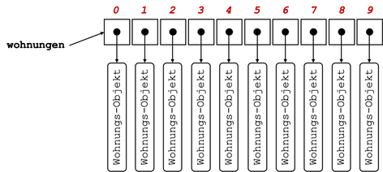
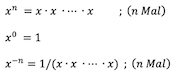

Übungen¶
Übungsblätter (wochenweise)¶
Übung 1 (20.10.2021)
Vorbereitung
- Installieren Sie - falls noch nicht geschehen - das Java Davelopment Kit (JDK) (siehe Java).
- Installieren Sie BlueJ (siehe IDE).
- Starten Sie BlueJ und öffnen Sie (
Project --> Open Project...) das Projektpicture(im BlueJ-Ordner unterexamples). Klicken Sie dann denCompile-Button. - Klicken Sie mit der rechten Maustaste auf die Klasse
Picture(das orangene Kästchen mit der BeschriftungPicture) und erzeugen Sie davon ein Objektpicture1. - Klicken Sie mit der rechten Maustaste auf das Objekt
picture1und rufen Sie die Methodedraw()auf. - Klicken Sie erneut mit der rechten Maustaste auf die Klasse
Pictureund öffnen Sie den Editor mitOpen Editor. Es erscheint das Java-Programm (der Quellcode) der KlassePicture:
1 2 3 4 5 6 7 8 9 10 11 12 13 14 15 16 17 18 19 20 21 22 23 24 25 26 27 28 29 30 31 32 33 34 35 36 37 38 39 40 41 42 43 44 45 46 47 48 49 50 51 52 53 54 55 56 57 58 59 60 61 62 63 64 65 66 67 68 69 70 71 72 73 74 75 76 77 78 79 80 81 82 83 84 85 | |
Durchführung
- Für diese Übung interessiert uns nur die Methode
draw(). Die Methodenaufrufe, die wir bis jetzt immer einzeln vorgenommen haben, werden nun "aufgeschrieben" - wir programmieren! - Ändern Sie Farben und Positionen der einzelnen Objekte!
- Wenn Sie Ihre Änderungen ausprobieren wollen, müssen Sie die Klasse neu
compilieren. Durch dasCompilierengehen die erzeugten Objekte verloren. Warum ist das wohl so? - Lassen Sie die Sonne langsam untergehen. Welche Objektmethode kommt dafür infrage? Für welches Objekt muss diese Objektmethode aufgerufen werden?
Tipp:
- Derzeit ist es recht mühsam, die Änderungen zu testen. Wir müssen die Klasse
Picturecompilieren, dann ein Objekt dieser Klasse erzeugen und dann für dieses Objekt die Methodedraw()aufrufen. Wir wollen diesen Vorgang etwas vereinfachen und erstellen uns dazu eine Testklasse. - Klicken Sie mit der rechten Maustaste auf die Klasse
Pictureund wählen SieCreate Test Classaus. - Klicken Sie mit der rechten Maustaste auf diese neue Testklasse
PictureTestund wählen SieCreate Test Method ...aus. - Geben Sie als Namen für diese Testmethode
drawTestan und bestätigen Sie die Eingabe mitOK. - Nun wird ein Test "aufgenommen". Klicken Sie mit der rechten Maustaste auf die Klasse
Pictureund erzeugen Sie von dieser Klasse eine Objektpicture1. Für dieses Objekt rufen Sie diedraw()-Methode auf. Klicken Sie dann im Hauptfenster auf der linken Seite unterrecordingden ButtonEnd. Sie haben nun einen Test erzeugt, den Sie leicht aufrufen können. - Ändern Sie Ihre
draw()-Methode, compilieren Sie die KlassePictureund wählen Sie nun mit der rechten Maustaste für die KlassePictureTestdie MethodedrawTest()aus und rufen diese auf.
Übung 2 (27.10.2021)
- Öffnen Sie
BlueJund erstellen Sie ein neues Projektuebung2. - Erstellen Sie darin eine Klasse
Uebung2. - Ersetzen Sie den gesamten Code der Klasse
Uebung2durch folgenden Code:public class Uebung2 { public Uebung2() { } public void printLesson2() { // Schreiben Sie Ihren gesamten Code in diese Methode // und fuehren Sie diese Methode aus } } - Deklarieren und initialisieren Sie in der
printLesson2()-Methode jeweils eine Variable mit dem Datentypint,long,char,byte,short,float,double,booleanundString. Geben Sie alle Werte einzeln durch Aufruf derprintln()-Methode aus. Erzeugen Sie dabei folgende Ausgabe (Werte nur Beispiele):Wert vom Typ int : 123 Wert vom Typ long : 456789 Wert vom Typ char : a Wert vom Typ byte : 127 Wert vom Typ short : 32767 Wert vom Typ float : 4.23 Wert vom Typ double : 6.98 Wert vom Typ boolean : true Wert vom Typ String : Hallo! - Setzen Sie den Wert Ihrer
int-Variablen auf2147483647. Geben Sie den Wert auf der Konsole aus, z.B.:
Erhöhen Sie nun den Wert der Variablen umWert von i : 21474836471und geben Sie den Wert erneut aus. Was passiert? Warum? - Wiederholen Sie das gleiche mit einer `long-Variablen.
- Weisen Sie Ihrer
char-Variablen den Wert65zu. Geben Sie den Wert Ihrerchar-Variablen aus. Was passiert? Warum? - Deklarieren Sie zwei weitere
int-Variablen und weisen Sie diesen Variablen Werte zu. Erzeugen Sie unter Verwendung der Werte dieser beiden Variablen folgende Ausgabe (wir nehmen an, die beiden Werte sind17und4):Ändern Sie das Programm so, dass bei einer ganzzahligen Division ohne Rest die Ausgabe in der Form ist (z.B. für die Werte17 geteilt durch 4 ergibt 4. Es bleibt ein Rest von 116und4):16 geteilt durch 4 ergibt 4 ohne Rest. - Fügen Sie (mindestens) zwei weitere Anweisungen hinzu, sodass mit Hilfe der
println()-Methode folgende Ausgaben (für die Beispielwerte17und4) erscheinen:17/4 = 4 17 mod 4 = 1
Eine mögliche Lösung für Übung 2
public class Uebung2
{
public Uebung2()
{
}
public void printLesson2()
{
// Schreiben Sie Ihren gesamten Code in diese Methode
// und fuehren Sie diese Methode aus
int in = 123;
long lo = 456789;
char ch = 'a';
byte by = 127;
short sh = 32767;
float fl = 4.23f;
double d1 = 6.98;
boolean b1 = true;
String s1 = "Hallo!";
System.out.println(" --- Aufgabe 3 -------");
System.out.println();
System.out.println("Wert vom Typ int : " + in );
System.out.println("Wert vom Typ long : " + lo );
System.out.println("Wert vom Typ char : " + ch );
System.out.println("Wert vom Typ byte : " + by );
System.out.println("Wert vom Typ short : " + sh );
System.out.println("Wert vom Typ float : " + fl );
System.out.println("Wert vom Typ double : " + d1 );
System.out.println("Wert vom Typ boolean : " + b1 );
System.out.println("Wert vom Typ String : " + s1 );
System.out.println();
System.out.println(" --- Aufgabe 4 -------");
System.out.println();
in = 2147483647;
System.out.println("Wert vom Typ int : " + in );
in = in + 1; // in++;
System.out.println("Wert vom Typ int : " + in );
System.out.println();
System.out.println(" --- Aufgabe 5 -------");
System.out.println();
lo = 2147483647L;
System.out.println("Wert vom Typ long : " + lo );
lo = lo +1 ;
System.out.println("Wert vom Typ long : " + lo );
System.out.println();
System.out.println(" --- Aufgabe 6 -------");
System.out.println();
ch = 65;
System.out.println("Wert vom Typ char : " + ch );
System.out.println();
System.out.println(" --- Aufgabe 7 -------");
System.out.println();
int nr1 = 17;
int nr2 = 4;
int quotient = nr1 / nr2;
int rest = nr1 % nr2;
if(rest==0)
{
System.out.println(nr1 + " geteilt durch " + nr2 + " ergibt " + quotient + " ohne Rest.");
}
else
{
System.out.println(nr1 + " geteilt durch " + nr2 + " ergibt " + quotient
+ ". Es bleibt ein Rest von " + rest);
}
System.out.println();
System.out.println(" --- Aufgabe 8 -------");
System.out.println();
int number1 = 17;
int number2 = 4;
int result = number1 / number2;
System.out.println(number1 + "/" + number2 + " = " + result);
int rest = number1 % number2;
System.out.println(number1 + " mod " + number2 + " = " + rest);
}
}
Übung 3 (3.11.2021)
- Öffnen Sie
BlueJund erstellen Sie ein neues Projektuebung3. - Erstellen Sie darin eine Klasse
Uebung3. - Ersetzen Sie den gesamten Code der Klasse
Uebung3durch folgenden Code:public class Uebung3 { public Uebung3() { } public void myLesson3Method() { // Definieren Sie alle Ihre Methoden außerhalb dieser Methode // Rufen Sie alle Ihre Methoden hier auf } } - Schreiben Sie eine Umrechnung für eine gegebene Anzahl von Sekunden (
printSeconds(int seconds)), z.B.printSeconds(3456789):Aber z.B.3456789 Sekunden sind 40 Tage, 13 Minuten, 9 Sekunden.printSeconds(2345678):Aber z.B.2345678 Sekunden sind 27 Tage, 3 Stunden, 34 Minuten, 38 Sekunden.printSeconds(123456):Aber z.B.123456 Sekunden sind 1 Tag, 10 Stunden, 17 Minuten, 36 Sekunden.printSeconds(12345):12345 Sekunden sind 3 Stunden, 25 Minuten, 45 Sekunden. - Die
printSeconds()-Methode gibt selbst etwas aus. Welchen Rückgabetyp hat sie? Schreiben Sie eine weitere MethodecomputeSeconds(int seconds), die genau die gleiche Funktionalität hat, aber den Ausgabestring nicht auf die Konsole ausgibt, sondern zurück. - Wie könnten (und sollten!) Sie die
computeSeconds()-Methode in derprintSeconds()-Methode verwenden? Warum?
Eine mögliche Lösung für Übung 3
public class Uebung3
{
public Uebung3()
{
}
public void printSeconds(int seconds)
{
int minute = 60;
int hour = 60 * minute; // 3600
int day = 24 * hour; // 86400
int days = seconds / day;
int remainingSeconds = seconds - (days * day);
int hours = remainingSeconds / hour;
remainingSeconds = remainingSeconds - (hours * hour);
int minutes = remainingSeconds / minute;
remainingSeconds = remainingSeconds - (minutes * minute);
/*
System.out.println(seconds + " Sekunden sind " + days + " Tage, "
+ hours + " Stunden, " + minutes + " Minuten, " + remainingSeconds + " Sekunden.");
*/
String output = seconds + " Sekunden sind ";
if(days==1)
{
output = output + " 1 Tag, ";
}
else
{
if(days > 1)
{
output = output + days + " Tage, ";
}
}
if(hours==1)
{
output = output + " 1 Stunde, ";
}
else
{
if(hours > 1)
{
output = output + hours + " Stunden, ";
}
}
if(minutes==1)
{
output = output + " 1 Minute, ";
}
else
{
if(minutes > 1)
{
output = output + minutes + " Minuten, ";
}
}
if(remainingSeconds==1)
{
output = output + " 1 Sekunde.";
}
else
{
if(remainingSeconds > 1)
{
output = output + remainingSeconds + " Sekunden.";
}
}
System.out.println(output);
}
public void myLesson3Method()
{
printSeconds(3456789);
printSeconds(2345678);
printSeconds(123456);
printSeconds(12345);
}
}
Übung 4 (10.11.2021)
- Öffnen Sie
BlueJund erstellen Sie ein neues Projektuebung4. - Erstellen Sie darin eine Klasse
Uebung4. - Ersetzen Sie den gesamten Code der Klasse
Uebung4durch folgenden Code:public class Uebung4 { public Uebung4() { } public void myLesson4Method() { // Definieren Sie alle Ihre Methoden außerhalb dieser Methode // Rufen Sie alle Ihre Methoden hier auf } } - Schreiben Sie eine Methode
isPrime(int number), die eintruezurückgibt, wennnumbereine Primzahl ist und einfalse, wenn nicht. Eine Primzahl ist eine natürliche Zahl größer als1, die nur durch1und sich selbst teilbar ist. - Schreiben Sie eine Methode
printprimeNumbers(int maximum), die alle Primzahlen von1bis einschließlichmaximumwie folgt auf der Konsole ausgibt (Bsp. fürmaximum=61):d.h. es werden die Zahlen, die Primzahlen sind, ausgegeben und für die anderen Zahlen erscheint nur ein Punkt. Verwenden Sie in der MethodeZahl : 61 .2 3 .5 .7 ...11 .13 ...17 .19 ...23 .....29 .31 .....37 ...41 .43 ...47 .....53 .....59 .61printPrimenumbers(int)die MethodeisPrime(int).
Zusatzaufgabe (gute Wiederholung/Vertiefung von Übung 3)
- Schreiben Sie eine Methode
isLeapYear(int year), die eintruezurückgibt, wennyearein Schaltjahr ist und einfalse, wenn nicht. Ein Jahr ist ein Schaltjahr, wenn die Jahreszahl durch4teilbar ist, aber nicht durch100, außer sie ist durch400teilbar. - Schreiben Sie eine Methode
printleapYear(int year), die füryearauf die Konsole ausgibt (Beispielwerte):2021 ist kein Schaltjahr. 2020 war ein Schaltjahr. 2000 war ein Schaltjahr. 2024 wird ein Schaltjahr. 2025 wird kein Schaltjahr.
Eine mögliche Lösung für Übung 4
public class Uebung4
{
public Uebung4()
{
}
public boolean isPrime(int number)
{
if(number>1)
{
for (int i=2;i<number;i++)
{
if(number%i==0) //ob i number ganzzahlig teilt (Division ohne Rest)
{
return false;
}
}
return true;
}
else
{
return false;
}
}
public void myLesson4Method()
{
//System.out.println(isPrime(1));
printPrimeNumbers(61);
}
public void printPrimeNumbers(int maximum)
{
for (int i=2;i<=maximum;i++)
{
if(isPrime(i))
{
System.out.print(i+" ");
}
else
{
System.out.print(". ");
}
}
}
}
Übung 5 (17.11.2021)
- Öffnen Sie
BlueJund erstellen Sie ein neues Projektuebung5. - Erstellen Sie darin eine Klasse
Uebung5. - Ersetzen Sie den gesamten Code der Klasse
Uebung5durch folgenden Code:public class Uebung5 { public Uebung5() { } public void start() { // Definieren Sie alle Ihre Methoden außerhalb dieser Methode // Rufen Sie alle Ihre Methoden hier auf } } - Wir schreiben uns zwei Methoden, die mathematische Funktionen umsetzen. Die eine Funktion berechnet die Potenz
base^expund die andere Funktion bereechnet die Quadratwurzel einer Zahl. Ziel der Übung ist es insbesondere, uns vorab die algorithmische Idee zu überlegen. Programmieren Sie also nicht gleich los, sondern überlegen Sie gemeinsam, wie Sie die beiden Funktionen umsetzen wollen! - Schreiben Sie eine Methode
public double pow(int base, int exp). Dabei stehtpowfür power. Es sollbase^expberechnet werden. Überlegen Sie sich zunächst z.B.:- Wenn
exppositiv ist, dann wollen wirbase * base * ... * baseberechnen, wobeibaseexpoft miteinander multipliziert wird. Welche Kontrollstruktur verwenden wir? Was sind die einzelnen "Teile" dieser Kontrollstruktur? - Wir müssen uns irgendwie das
productdieser Multiplikationen merken. Wie ist der initiale Wert vonproductund warum? - Funktioniert Ihre Idee auch, wenn
expden Wert0hat? Warum bzw. warum nicht? - Wenn
expnegativ ist, dann istbase^-exp = 1/(base^exp). Was müssen wir ändern? - Warum ist der Rückgabetyp
double? Warum nichtint?
- Wenn
- Implementieren Sie eine Methode
public void printPow(int base, int exp), um Werte der Methodenaufrufe vonpow()auf die Konsole auszugeben! Rufen SieprintPow(int base, int exp)instart()auf!
Zusatzaufgabe (falls noch Zeit ist)
-
Schreiben Sie eine Methode
public double sqrt(int number), die die Quadratwurzel der Zahlnumberberechnet. Wir verfolgen dabei folgende Idee (Heron-Verfahren):- Wir stellen uns ein Rechteck vor, dessen Seitenlängen
numberund1sind. Die Fläche dieses Rechtecks ist alsonumber. Nun versuchen wir, aus diesem Rechteck ein Quadrat zu machen (rein virtuell natürlich). Der Flächeninhalt von diesem Quadrat sollnumbersein/bleiben. Ein Quadrat mit dem Flächeninhaltnumbeerhat die Seitenlängensqrt(number), also das, was wir wollen. - Um aus dem Rechteck ein Quadrat zu machen, gehen wir schrittweise vor: die eine Seite des Rechteckes/Quadrates wird der Mittelwert aus den Seiten des Rechtecks. Nun berechnen wir die andere Seite indem wir den Flächeninhalt des Rechtecks (
number) durch die neue Seitenlänge teilen. Somit haben wir 2 neue Seitenlängen, das Rechteck behält aber den Flächeninhaltnumber. - Wir berechnen erneut die neue Seitenlänge des Rechtecks, indem wir den Mittelwert der beiden Seitenlängen berechnen und ermitteln dann wieder die andere Seitenlänge, indem wir den Flächeninhalt durch die Seitenlänge teilen. Die beiden Seitenlängen nähern sich dann zunehmend an und sind irgendwann fast identisch, also ein Quadrat.
- Wie lange müssen wir das wiederholen? Was ist am Ende unser Ergebnis? Von welchem Datentyp sollten die Seitenlängen sein?
- Überlegen Sie sich das Vorgehen genau, ehe Sie programmieren!
-
Beispiel zur Berechnung der Wurzel aus 8:

- Wir stellen uns ein Rechteck vor, dessen Seitenlängen
-
Implementieren Sie eine Methode
public void printSqrt(int number), um Werte der Methodenaufrufe vonsqrt()auf die Konsole auszugeben! Rufen SieprintSqrt(int number)instart()auf!
Eine mögliche Lösung für Übung 5
public class Uebung5
{
public double pow(int base, int exp)
{
double product = 1.0;
if(exp < 0)
{
for(int nr = 1; nr <= -exp; nr++) // -exp !
{
product = product * base;
}
product = 1.0 / product;
}
else
{
for(int nr = 1; nr <= exp; nr++)
{
product = product * base;
}
}
return product;
}
public double powDifferentSolution(int base, int exp)
{
double product = 1.0;
int copyExp = exp;
if(exp < 0)
{
copyExp = -exp;
}
for(int nr = 1; nr <= copyExp; nr++)
{
product = product * base;
}
if(exp < 0)
{
product = 1.0 / product;
}
return product;
}
public double sqrt(int number)
{
double area = number;
double a = number;
double b = 1.0;
double epsilon = 0.00000001;
while( (a-b)*(a-b) > epsilon )
{
a = (a+b)/2.0;
b = area/a;
}
return a;
}
public void start()
{
int base = 2;
int exp = 4;
double result = pow(base, exp);
System.out.println(base + "^" + exp + " = " + result);
base = 2;
exp = 0;
result = pow(base, exp);
System.out.println(base + "^" + exp + " = " + result);
base = 2;
exp = -4;
result = pow(base, exp);
System.out.println(base + "^" + exp + " = " + result);
base = -2;
exp = 4;
result = pow(base, exp);
System.out.println(base + "^" + exp + " = " + result);
base = -2;
exp = -4;
result = pow(base, exp);
System.out.println(base + "^" + exp + " = " + result);
base = -2;
exp = 3;
result = pow(base, exp);
System.out.println(base + "^" + exp + " = " + result);
base = -2;
exp = -3;
result = pow(base, exp);
System.out.println(base + "^" + exp + " = " + result);
System.out.println(sqrt(4));
System.out.println(sqrt(8));
System.out.println(sqrt(2));
}
}
Übung 6 (24.11.2021)
- Öffnen Sie
BlueJund erstellen Sie ein neues Projektuebung6. - Erstellen Sie darin eine Klasse
Konto. - Erstellen Sie eine Testklasse
KontoTestund fügen Sie darin folgende Methode ein:@Test public void testKonto() { // hier die Kontoobjekte erzeugen // und die Objektmethoden anwenden } - Erstellen Sie in der Klasse
Kontozwei Objektvariablenguthabenvom Typdouble→ nur in der Klasse sichtbar!pinvom Typint→ ebenfalls nur in der Klasse sichtbar!
- Erstellen Sie in der Klasse
Kontoeinen Konstruktor fürKonto- diesem Konstruktor wird als Parameter
int pPinübergeben - mit dem Wert des Parameters wird innerhalb des Konstruktors der Wert von
pininitialisiert - Initialisieren Sie im Konstruktor auch die Objektvariable
guthaben. Sie bekommt den Wert0.0(hierfür haben wir also keinen Parameter, wir setzen den initialen Wert einfach generell auf0.0)
- diesem Konstruktor wird als Parameter
- Erstellen Sie in der Klasse
Kontoeine Objektmethodeeinzahlen(double betrag)- diese Objektmethode ist
publicund gibt nichts zurück - in dieser Methode wird der Wert der Objektvariablen
guthabenum den Wert vonbetragerhöht - erzeugen Sie in dieser Methode außerdem eine Ausgabe in der Form:
falls der
Es wurden 100,00 Euro eingezahlt.betragden Wert100.0hatte. Die Formatierung des Betrages wird bei Ihnen anders aussehen - siehe dazu auch Zusatzaufgabe.
- diese Objektmethode ist
- Geben Sie in der
testKonto()-Methode der TestklasseKontoTestein:und führen Sie dieKonto k1 = new Konto(1234); k1.einzahlen(100.0); k1.einzahlen(50.0); k1.einzahlen(150.0);testKonto()-Methode aus. Es sollten folgende Ausgaben erzeugt werden:Es wurden 100,00 Euro eingezahlt. Es wurden 50,00 Euro eingezahlt. Es wurden 150,00 Euro eingezahlt. - Erstellen Sie in der Klasse
Kontoeine Objektmethodekontoauszug(int pPin)- diese Objektmethode ist
publicund gibt nichts zurück - einen
kontoauszug(int pPin)können Sie nur "ziehen", wenn der Parameterwert vonpPinmit dem Wert der Objektvariablenpinübereinstimmt - wird der richtige Wert für die
pinübergeben, geben Sie dasguthabenin der folgenden Form aus:fallsIhr aktuelles Guthaben betraegt 300,00 Euro.guthabenden Wert von300.0hat. - wird ein falscher Wert für die
pinübergeben, geben Sie folgende Ausgabe aus:Falsche PIN!
- diese Objektmethode ist
- Erweitern Sie die
testKonto()-Methode der Testklasse um folgende Anweisungen:und führen Sie diek1.kontoauszug(1235); // Falsche PIN! k1.kontoauszug(1234);testKonto()-Methode aus. Es sollten folgende (weitere) Ausgaben erzeugt werden:Falsche PIN! Ihr aktuelles Guthaben betraegt 300,00 Euro. - Erstellen Sie in der Klasse
Kontoeine Objektmethodeauszahlen(int pPin, double betrag)- diese Objektmethode ist
publicund gibt nichts zurück - es kann nur etwas ausgezahlt werden, wenn der Parameterwert von
pPinmit dem Wert der Objektvariablenpinübereinstimmt - stimmen die Werte nicht überein, geben Sie erneut
aus.
Falsche PIN! - stimmt der
pin-Wert, dann müssen Sie prüfen, ob dasguthabenreicht, umbetragauszuzahlen. Ist nicht genugguthabenvorhanden, dann geben Sie ausfallsIhr Guthaben reicht nicht, um 400,00 Euro auszuzahlen.betragden Wert400.0hatte. - wenn der
pin-Wert stimmt und genugguthabenvorhanden ist, um denbetragauszuzahlen, dann reduzieren Sieguthabenum den entsprechendenbetragund geben ausfalls derEs wurden 100,00 Euro ausgezahlt.betragden Wert100.0hatte.
- diese Objektmethode ist
- Erweitern Sie die
testKonto()-Methode der Testklasse um folgende Anweisungen:und führen Sie diek1.auszahlen(1235, 100.0); // Falsche PIN! k1.auszahlen(1234, 100.0); k1.kontoauszug(1234); k1.auszahlen(1234, 300.0); // Guthaben reicht nicht k1.auszahlen(1234, 200.0); k1.kontoauszug(1234);testKonto()-Methode aus. Es sollten folgende (weitere) Ausgaben erzeugt werden:Falsche PIN! Es wurden 100,00 Euro ausgezahlt. Ihr aktuelles Guthaben betraegt 200,00 Euro. Ihr Guthaben reicht nicht, um 300,00 Euro auszuzahlen. Es wurden 200,00 Euro ausgezahlt. Ihr aktuelles Guthaben betraegt 0,00 Euro. - Angenommen, die gesamte Testmethode sieht jetzt so aus:
dann sollte die Ausgabe ungefähr so aussehen (wahrscheinlich nur eine Stelle nach dem Komma/Punkt):
@Test public void testKonto() { Konto k1 = new Konto(1234); k1.einzahlen(100.0); k1.einzahlen(50.0); k1.einzahlen(150.0); k1.kontoauszug(1235); // Falsche PIN! k1.kontoauszug(1234); k1.auszahlen(1235, 100.0); // Falsche PIN! k1.auszahlen(1234, 100.0); k1.kontoauszug(1234); k1.auszahlen(1234, 300.0); k1.auszahlen(1234, 200.0); k1.kontoauszug(1234); k1.einzahlen(150.0); k1.kontoauszug(1234); }Es wurden 100,00 Euro eingezahlt. Es wurden 50,00 Euro eingezahlt. Es wurden 150,00 Euro eingezahlt. Falsche PIN! Ihr aktuelles Guthaben betraegt 300,00 Euro. Falsche PIN! Es wurden 100,00 Euro ausgezahlt. Ihr aktuelles Guthaben betraegt 200,00 Euro. Ihr Guthaben reicht nicht, um 300,00 Euro auszuzahlen. Es wurden 200,00 Euro ausgezahlt. Ihr aktuelles Guthaben betraegt 0,00 Euro. - Zusatzaufgabe (falls noch Zeit ist):
- Informieren Sie sich über die
System.out.printf()-Methode, um stets genau 2 Stellen nach dem Komma des Betrages auszugeben (siehe hier).
- Informieren Sie sich über die
Eine mögliche Lösung für Übung 6
public class Konto
{
private double guthaben;
private int pin;
public Konto (int pin)
{
this.pin = pin;
this.guthaben = 0.0;
System.out.println("Neues Konto eroeffnet"); // Ausnahme, dass hier Ausgabe!!
// "Das ist des Teufels"
}
public void einzahlen(double betrag)
{
this.guthaben = betrag + this.guthaben;
System.out.println("Es wurden " + betrag + "0 Euro eingezahlt.");
}
public void auszahlen(int pin, double betrag)
{
if(pin == this.pin) // if(pin == this.pin && this.guthaben <= betrag) dann wäre es kürzer,
//aber wir können nicht sehen, wo der fehler liegt, deswegen besser einzeln...)
{
if(betrag > this.guthaben)
{
System.out.println("Ihr Guthaben reicht nicht, um " + betrag + "0 Euro auszuzahlen.");
}
else
{
this.guthaben = this.guthaben - betrag;
System.out.println("Es wurden " + betrag + "0 Euro ausgezahlt.");
}
}
else
{
System.out.println("Falsche PIN!");
}
}
public void kontoauszug(int pin)
{
if(pin == this.pin)
{
System.out.println("Ihr aktuelles Guthaben beträgt " + this.guthaben + "0 Euro.");
}
else
{
System.out.println("Falsche PIN!");
}
}
}
import static org.junit.jupiter.api.Assertions.*;
import org.junit.jupiter.api.AfterEach;
import org.junit.jupiter.api.BeforeEach;
import org.junit.jupiter.api.Test;
public class KontoTest
{
@Test
public void testKonto()
{
Konto k1 = new Konto(1234);
k1.einzahlen(100.0);
k1.einzahlen(50.0);
k1.einzahlen(150.0);
k1.kontoauszug(1235); // Falsche PIN!
k1.kontoauszug(1234);
k1.auszahlen(1235, 100.0); // Falsche PIN!
k1.auszahlen(1234, 100.0);
k1.kontoauszug(1234);
k1.auszahlen(1234, 300.0); // Guthaben reicht nicht
k1.auszahlen(1234, 200.0);
k1.kontoauszug(1234);
k1.einzahlen(150.0);
k1.kontoauszug(1234);
// hier die Kontoobjekte erzeugen
// und die Objektmethoden anwenden
}
@Test
public void teststart()
{
}
}
Übung 7 (1.12.2021)
- Öffnen Sie
BlueJund erstellen Sie ein neues Projektuebung7. - Erstellen Sie darin eine Klasse
Rectangle. - Erstellen Sie eine Testklasse
RectangleTestund fügen Sie darin folgende Methode ein:@Test public void testRectangle() { // hier die Rectangleobjekte erzeugen // und die Objektmethoden anwenden } - Erstellen Sie in der Klasse
Rectanglezwei Objektvariablenavom Typint→ nur in der Klasse sichtbar!bvom Typint→ ebenfalls nur in der Klasse sichtbar!aundbrepräsentieren die Seiten des Rechtecks.
- Erstellen Sie für die Klasse
Rectangleeinen parameterlosen KonstruktorRectangle(). Dieser setzt für die Seiteaden Wert10und für die Seitebden Wert20. - Erstellen Sie außerdem einen parametrisierten Konstruktor
Rectangle(int a, int b). Dieser verwendet die Werte der Parameter, um den Objektvariablen Werte zuzuweisen. - Erstellen Sie eine Objektmethode
area(), die den Flächeninhalt des Rechtecks alsintzurückgibt. - Erstellen Sie eine Objektmethode
perimeter(), die den Umfang des Rechtecks alsintzurückgibt. -
Erstellen Sie eine Objektmethode
toString(), die Informationen über das Rechtecks alsStringin z.B. der folgenden Form (Beispielwerte):zurückgibt.Rectangle : ( a=10, b=20, area=200, perimeter=60 ) -
Implementieren Sie eine Objektmethode
public void print(), die den durchtoString()erzeugtenStringauf die Konsole ausgibt. - Geben Sie in der
testRectangle()-Methode derRectangleTest-Klasse ein:und rufen Sie die// Objekte erzeugen Rectangle r1 = new Rectangle(); Rectangle r2 = new Rectangle(12, 18); Rectangle r3 = new Rectangle(40, 5); Rectangle r4 = new Rectangle(20, 10); Rectangle r5 = new Rectangle(11, 21); System.out.printf("%n%n--------------- print()-Methode -----------------%n%n"); r1.print(); r2.print(); r3.print(); r4.print(); r5.print();testRectangle()auf. Es sollten folgende Ausgaben erzeugt werden:--------------- print()-Methode ----------------- Rectangle : ( a=10, b=20, area=200, perimeter=60 ) Rectangle : ( a=12, b=18, area=216, perimeter=60 ) Rectangle : ( a=40, b= 5, area=200, perimeter=90 ) Rectangle : ( a=20, b=10, area=200, perimeter=60 ) Rectangle : ( a=11, b=21, area=231, perimeter=64 ) - Erstellen Sie eine Methode
sidesAreEqual(Rectangle r), die eintruezurückgibt, wenn die Seiten des aufrufenden Objektes gleich der Seiten des Rechtecksrsind;falsesonst. Sie können entscheiden, dass das Rechteck auch gedreht noch gleiche Seiten haben soll, alsoa=10, b=20ist nicht nur mita=10, b=20gleich, sondern auch mita=20, b=10. Wenn die Seiten ungleich sind, gibt die Methode einfalsezurück. - Erstellen Sie eine Methode
areasAreEqual(Rectangle r), die eintruezurückgibt, wenn der Flächeninhalt des aufrufenden Objektes gleich dem Flächeninhalt des Rechtecksrist;falsesonst. - Erstellen Sie eine Methode
perimetersAreEqual(Rectangle r), die eintruezurückgibt, wenn der Umfang des aufrufenden Objektes gleich dem Umfang des Rechtecksrist;falsesonst. - Erstellen Sie eine Methode
printComparison(Rectangle r), die die Vergleiche mitrauf die Konsole ausgibt, z.B.:this Rectangle : ( a=10, b=20, area=200, perimeter=60 ) the other Rectangle : ( a=12, b=18, area=216, perimeter=60 ) sides are not equal areas are not equal perimeters are equal this Rectangle : ( a=10, b=20, area=200, perimeter=60 ) the other Rectangle : ( a=40, b= 5, area=200, perimeter=90 ) sides are not equal areas are equal perimeters are not equal this Rectangle : ( a=10, b=20, area=200, perimeter=60 ) the other Rectangle : ( a=20, b=10, area=200, perimeter=60 ) sides are equal areas are equal perimeters are equal this Rectangle : ( a=10, b=20, area=200, perimeter=60 ) the other Rectangle : ( a=11, b=21, area=231, perimeter=64 ) sides are not equal areas are not equal perimeters are not equal - Fügen Sie in der
testRectangle()-Methode derRectangleTest-Klasse folgende Anweisungen hinzu:und rufen Sie dieSystem.out.printf("%n%n---------- printComparison()-Methode ------------%n%n"); r1.printComparison(r2); r1.printComparison(r3); r1.printComparison(r4); r1.printComparison(r5);testRectangle()-Methode auf. Es sollten folgende zusätzliche Ausgaben erzeugt werden:---------- printComparison()-Methode ------------ this Rectangle : ( a=10, b=20, area=200, perimeter=60 ) the other Rectangle : ( a=12, b=18, area=216, perimeter=60 ) sides are not equal areas are not equal perimeters are equal this Rectangle : ( a=10, b=20, area=200, perimeter=60 ) the other Rectangle : ( a=40, b= 5, area=200, perimeter=90 ) sides are not equal areas are equal perimeters are not equal this Rectangle : ( a=10, b=20, area=200, perimeter=60 ) the other Rectangle : ( a=20, b=10, area=200, perimeter=60 ) sides are equal areas are equal perimeters are equal this Rectangle : ( a=10, b=20, area=200, perimeter=60 ) the other Rectangle : ( a=11, b=21, area=231, perimeter=64 ) sides are not equal areas are not equal perimeters are not equal
Eine mögliche Lösung für Übung 7
public class Rectangle
{
private int a;
private int b;
// a,b repräsentieren Seiten des Rechtecks
public Rectangle()
{
this.a = 10;
this.b = 20;
}
public Rectangle(int a, int b)
{
this.a = a;
this.b = b;
}
public int area()
{
return this.a * this.b;
}
public int perimeter()
{
return 2 * this.a + 2 * this.b;
}
public String toString()
{
/*String output = "Rectangle : ( a=" + this.a + ", b=" + this.b + ", area=";
output = output + " this.area() + ", perimeter=" + this.perimeter() + " )"
*/
String output = String.format("Rectangle : ( a=%2d, b=%2d, area=%3d, perimeter=%2d )", this.a, this.b, this.area(), this.perimeter() );
return output;
}
public void print()
{
System.out.println(this.toString());
}
public boolean sidesAreEqual(Rectangle r)
{
boolean equals = false;
if((this.a == r.a && this.b == r.b) || (this.a == r.b && this.b == r.a))
{
equals = true;
}
return equals;
}
public boolean areasAreEqual(Rectangle r)
{
return (this.area() == r.area());
}
public boolean perimetersAreEqual(Rectangle r)
{
return (this.perimeter() == r.perimeter());
}
public void printComparison(Rectangle r)
{
System.out.printf("%-9s %s %n", "this", this.toString());
System.out.printf("%-9s %s %n", "the other", r.toString());
if(this.sidesAreEqual(r))
{
System.out.println("sides are equal");
}
else
{
System.out.println("sides are not equal");
}
if(this.areasAreEqual(r))
{
System.out.println("areas are equal");
}
else
{
System.out.println("areas are not equal");
}
if(this.perimetersAreEqual(r))
{
System.out.println("perimeters are equal");
}
else
{
System.out.println("perimeters are not equal");
}
System.out.println();
}
}
import static org.junit.jupiter.api.Assertions.*;
import org.junit.jupiter.api.AfterEach;
import org.junit.jupiter.api.BeforeEach;
import org.junit.jupiter.api.Test;
public class RectangleTest
{
@Test
public void testRectangle()
{
// Objekte erzeugen
Rectangle r1 = new Rectangle();
Rectangle r2 = new Rectangle(12, 18);
Rectangle r3 = new Rectangle(40, 5);
Rectangle r4 = new Rectangle(20, 10);
Rectangle r5 = new Rectangle(11, 21);
System.out.printf("%n%n--------------- print()-Methode -----------------%n%n");
r1.print();
r2.print();
r3.print();
r4.print();
r5.print();
System.out.printf("%n%n---------- printComparison()-Methode ------------%n%n");
r1.printComparison(r2);
r1.printComparison(r3);
r1.printComparison(r4);
r1.printComparison(r5);
}
}
Übung 8 (8.12.2021)
- Öffnen Sie
BlueJund erstellen Sie ein neues Projektuebung8. - Erstellen Sie darin eine Klasse
Date. - Erstellen Sie eine Programmklasse
Programclassund fügen Sie darin folgende Methode ein:public void start() { // hier die Rectangleobjekte erzeugen // und die Objektmethoden anwenden } -
Erstellen Sie in der Klasse
Datedrei Objektvariablendayvom Typint→ nur in der Klasse sichtbar!monthvom Typint→ ebenfalls nur in der Klasse sichtbar!yearvom Typint→ ebenfalls nur in der Klasse sichtbar!
-
Erstellen Sie für die Klasse
Dateeinen parameterlosen Konstruktorpublic Date(). Dieser setzt das "Datum" auf den1.1.1900. - Erstellen Sie außerdem einen parametrisierten Konstruktor
public Date(int day, int month, int year). Dieser verwendet die Werte der Parameter, um den Objektvariablen Werte zuzuweisen. - Erstellen Sie eine Objektmethode
public String toString(), die das Datum in der Form (Beispielwerte)"1.1.1900"alsStringzurückgibt. - Implementieren Sie eine Objektmethode
public void print(), die den durchtoString()erzeugtenStringauf die Konsole ausgibt. -
Geben Sie in der
start()-Methode derProgramclass-Klasse ein:und rufen Sie die// Date-Objekte erzeugen Date d1 = new Date(11, 11, 2000); Date d2 = new Date(20, 10, 2020); Date d3 = new Date(); System.out.printf("%n%n--------------- print()-Methode Date -----------------%n%n"); d1.print(); d2.print(); d3.print();start()-Methode auf. Es sollten folgende Ausgaben erzeugt werden:--------------- print()-Methode Date ----------------- 11.11.2000 20.10.2020 1.1.1900 -
Erstellen Sie im Projekt eine weitere Klasse
Fruit. -
Erstellen Sie in der Klasse
Fruitzwei Objektvariablennamevom TypString→ nur in der Klasse sichtbar!expiryvom TypDate→ ebenfalls nur in der Klasse sichtbar!
-
Erstellen Sie für die Klasse
Fruiteinen prametrisierten Konstruktorpublic Fruit(String name, Date expiry). Dieser verwendet die Werte der Parameter, um den Objektvariablen Werte zuzuweisen. - Erstellen Sie eine Objektmethode
public String toString(), die die Frucht in der Form (Beispielwerte)"Banana expires on 11.11.2000"alsStringzurückgibt. - Implementieren Sie eine Objektmethode
public void print(), die den durchtoString()erzeugtenStringauf die Konsole ausgibt. -
Geben Sie in der
start()-Methode derProgramclass-Klasse ein:und rufen Sie die// Fruit-Objekte erzeugen Fruit banana = new Fruit("Banana", d1); Fruit apple = new Fruit("Apple", d2); Fruit pear = new Fruit("Pear", d3); System.out.printf("%n%n--------------- print()-Methode Fruit -----------------%n%n"); banana.print(); apple.print(); pear.print();start()-Methode auf. Es sollten folgende Ausgaben erzeugt werden:--------------- print()-Methode Fruit ----------------- Banana expires on 11.11.2000 Apple expires on 20.10.2020 Pear expires on 1.1.1900 -
Erweiteren Sie die Klasse
Dateum folgende Methodepublic void later(int days). Bei Anwendung dieser Methode soll zum aktuellen Datum die als Parameter übergebenendayshinzugefügt werden. Dabei ist Folgendes zu beachten:- Die Anzahl von
dayskann auch mehrere Jahre und mehrere Monate umfassen. Das soll eine Wiederholung von Übung 3 sein - aber nicht gleich dort nachgucken, sondern nochmal überlegen!- Wir nehmen an, dass jeder Monat nur
30Tage hat und ein Jahr immer nur365.
- Wir nehmen an, dass jeder Monat nur
- Die Anzahl von
-
Erweiteren Sie die Klasse
Fruitum die Methodepublic Date getExpiryDate(). -
Geben Sie in der
start()-Methode derProgramclass-Klasse ein:System.out.printf("%n%n------------ later() und getExpiryDate ----------------%n%n"); d1.later(12); d2.later(123); d3.later(1234); d1.print(); d2.print(); d3.print(); banana.print(); apple.print(); pear.print(); banana.getExpiryDate().later(12); apple.getExpiryDate().later(123); pear.getExpiryDate().later(1234); d1.print(); d2.print(); d3.print(); -
Was stellen Sie fest? Läuft etwas schief? Was sind die Probleme? Worin liegen sie begründet? Haben Sie Ideen, wie Sie diese Probleme vermeiden könnten? (Übrings: das Thema, das wir hier ein wenig näher beleuchten, nennt sich immutable objects)
Eine mögliche Lösung für Übung 8
public class Date
{
private int day;
private int month;
private int year;
public Date(int day, int month, int year)
{
this.day = day;
this.month = month;
this.year = year;
}
public Date()
{
this.day = 1;
this.month = 1;
this.year = 1900;
}
/*
* Die folgende Implementierung stellt eine Möglichkeit dar,
* ein späteres Datum zu bestimmen. Diese Methode ändert aber
* das Objekt selbst, d.h. die Werte der Objektvariablen
* werden neu gesetzt. Dadurch wird das Objekt veränderlich.
*/
public void later(int days)
{
int years = days / 365;
int remainder = days % 365;
int months = remainder / 30;
remainder = remainder % 30;
this.year += years;
this.day += remainder;
this.month += months;
if(this.day > 30)
{
this.month++;
this.day %= 30;
}
if(this.month > 12)
{
this.year++;
this.month %= 12;
}
}
/*
* Die folgende Implementierung stellt eine Möglichkeit dar,
* ein späteres Datum zu bestimmen. Diese Methode ändert aber
* das Objekt selbst, d.h. die Werte der Objektvariablen
* werden neu gesetzt. Dadurch wird das Objekt veränderlich.
*/
public Date laterImmutable(int days)
{
int years = days / 365;
int remainder = days % 365;
int months = remainder / 30;
remainder = remainder % 30;
// nur noch lesenden Zugriff auf die
// Werte der Objektvariablen -->
// Werte bleiben unverändert
int newYears = this.year + years;
int newDays = this.day + remainder;
int newMonths = this.month + months;
if(newDays > 30)
{
newMonths++;
newDays %= 30;
}
if(newMonths > 12)
{
newYears++;
newMonths %= 12;
}
return new Date(newDays, newMonths, newYears);
}
public String toString()
{
return this.day + "." + this.month + "." + this.year;
}
public void print()
{
System.out.println(this.toString());
}
}
public class Fruit
{
private String name;
private Date expiry;
public Fruit(String name, Date expiry)
{
this.name = name;
this.expiry = expiry;
// man könnte hier überlegen, ob man wirklich die Referenz auf
// das übergebene Date-Objekt speichern möchte oder lieber
// eine eigene Kopie des Objektes erzeugen und diese speichern
// dazu fehlen allerdings die Getter der Date-Objektvariablen :-(
}
public String toString()
{
return this.name + " expires on " + this.expiry.toString();
}
public void print()
{
System.out.println( this.toString() );
}
public Date getExpiryDate()
{
return this.expiry;
// hier wäre es auch besser, nicht die Referenz, sondern
// ein neues Date-Objekt zurückzugeben
// dazu fehlen allerdings die Getter der Date-Objektvariablen :-(
}
}
public class Programclass
{
public void start()
{
Date d1 = new Date(11, 11, 2000);
Date d2 = new Date(20, 10, 2020);
Date d3 = new Date();
System.out.printf("%n%n--------------- print()-Methode Date -----------------%n%n");
d1.print();
d2.print();
d3.print();
Fruit banana = new Fruit("Banana", d1);
Fruit apple = new Fruit("Apple", d2);
Fruit pear = new Fruit("Pear", d3);
System.out.printf("%n%n--------------- print()-Methode Fruit -----------------%n%n");
banana.print();
apple.print();
pear.print();
System.out.printf("%n%n------------ later() und getExpiryDate ----------------%n%n");
d1.later(12);
d2.later(123);
d3.later(1234);
d1.print();
d2.print();
d3.print();
banana.print();
apple.print();
pear.print();
banana.getExpiryDate().later(12);
apple.getExpiryDate().later(123);
pear.getExpiryDate().later(1234);
d1.print();
d2.print();
d3.print();
}
}
Übung 9 (15.12.2021)
-
Diese Übung wird nicht am Rechner durchgeführt, sondern es geht um Programmverständinis und algorithmische Ideen!
-
Zunächst ein Beispiel für eine “Erklären Sie den folgenden Code in einem Satz”-Aufgabe:
Antwort: Der kleinere Wert der Variablen a und b wird ausgegeben.if (a < b) { System.out.print(a); } else { System.out.print(b); } -
Was wird durch folgenden Code auf der Konsole ausgegeben?:
public class PrinterClass { public static void main ( String[] args ) { System.out.print ( "answer=" ); System.out.println ( 40 + 2 ); } } -
Was wird durch folgenden Code auf der Konsole ausgegeben?:
int number = 3; while (number == 3) { System.out.print(number + " + " ); number++; } -
Was wird durch folgenden Code auf der Konsole ausgegeben?:
for (int count=0; count<4; count--) { System.out.print(count); } -
Erklären Sie den folgenden Code in einem Satz.
int sum = 0; for ( int n=1 ; n<=20 ; n++ ) { sum = sum + n; } System.out.println(sum); -
Erklären Sie den folgenden Code in einem Satz.
Welche Kombination von Werten sorgt dafür, dassif (a < b) { if (b < c) { System.out.println(c); } else { System.out.println(b); } } else if (a < c) { System.out.println(c); } else { System.out.println(a); }bausgegeben wird? -
Was macht der folgende Code?
public class Student { private String name ; private int age ; public Student ( String name , int age ) { this.name = name ; this.age = age ; } public int getAge ( ) { return age ; } public int hadBirthday ( ) { return age = age + 1 ; } public void main ( ) { Student willi = new Student ( "Willi" , 25 ) ; willi.hadBirthday ( ) ; System.out.print ( willi.getAge ( ) ) ; } } -
Welchen Wert liefert
rect2.area( )?public class Rectangle { private int x1, y1, x2, y2; public Rectangle (int x1 , int y1 , int x2 , int y2) { this.x1 = x1; this.y1 = y1; this.x2 = x2; this.y2 = y2; } public int width() { return this.x2 - this.x1; } public int height() { return this.y2 - this.y1; } public double area() { return this.width() * this.height(); } public void main () { Rectangle rect1 = new Rectangle(0 , 0 , 10 , 10); System.out.println(rect1.area()); Rectangle rect2 = new Rectangle(5 , 5 , 10 , 10); System.out.println(rect2.area()); } } -
Was macht der folgende Code?
public class Vehicle { String producer, type; int topSpeed, currentSpeed; public Vehicle ( String p , String t , int tp ) { this.producer = p; this.type = t; this.topSpeed = tp; this.currentSpeed = 0; } public int accelerate ( int kmh ) { if ( ( this.currentSpeed + kmh ) > this.topSpeed ) { this.currentSpeed = this.topSpeed; } else { this.currentSpeed = this.currentSpeed + kmh ; } return this.currentSpeed; } public static void main (String args[ ]) { Vehicle v = new Vehicle ( "Audi" , "A6" , 200 ) ; v.accelerate ( 10 ) ; } } -
Was wird durch folgenden Code auf der Konsole ausgegeben?
int iNum = 3; for(int iX = 0; iX < iNum; iX++) { for(int iY = 0; iY < iNum; iY++) { System.out.print("*"); } System.out.println(); } -
Was wird durch folgenden Code auf der Konsole ausgegeben?
public class PrintPattern { public void printMethod ( int numberOfRows ) { for ( int row = 1 ; row <= numberOfRows ; row ++ ) { for ( int col = 1 ; col <= row ; col ++ ) { System.out.print ( '*' ) ; } System.out.println ( ) ; } } public void main ( ) { PrintPattern p = new PrintPattern(); p.printMethod ( 3 ) ; } } -
Was berechnet der folgende Code?
public int calculate ( int number1 , int number2 ) { int result = number1 ; for ( int i = 2 ; i <= number2 ; i += 1 ) { result = result * number1 ; } return result ; } -
Was wird durch folgenden Code auf der Konsole ausgegeben?
int n = 4; for (int row=1; row<=n; row++) { for (int column=1; column<=n; column++) { if (row==1 || row==n || column==1 || column==n) System.out.print ("* "); else System.out.print (" "); } System.out.println( ); } }
Übung 10 (22.12.2021)
- Wir nutzen von nun an Eclipse in den Übungen und in den Vorlesungen. Bitte installieren!
- Erstellen Sie ein package
uebungen.uebung10. -
Erstellen Sie in diesem package eine Klasse
Programmklassemitmain()-Methode und eine KlasseUebung10. -
Implementieren Sie in der Klasse
Uebung10folgende Methoden:-
Implementieren Sie eine
public void print(char[] ca)-Methode, so dass daschar[] caauf die Konsole ausgegeben wird. Achten Sie darauf, dass hinter dem letzten Element kein Komma steht. Testen Sie Ihre Methode auch für ein leeres Array.
Bsp:print(['a', 'b', 'c', 'a', 'c', 'a', 'b', 'c'])
Ausgabe auf Konsole:[a, b, c, a, c, a, b, c] -
Kopieren Sie die
print-Methode vollständig und ändern Sie den Typ des Parameters vonchar[]inint[]. (Die Methode ist jetzt überladen undprint()kann jetzt entweder einchar[]oder einint[]übergeben werden, welches auf die Konsole ausgegeben wird.) -
Implementieren Sie eine Methode
public char[] stringToCharArray(String s). Diese Methode wandelt einenStringin einchar[]um, so dass jedes Zeichen des Strings imchar[]enthalten ist. Daschar[]wird zurückgegeben.
Tipps: die Länge eines Strings wird mit der Objektmethodelength()ermittelt. Die einzelnen Zeichen eines Strings können mithilfe dercharAt(index)-Objektmethode von Strings ermittelt werden. Siehe String
Bsp.:stringToCharArray("hallo!")→['h','a','l','l','o','!'] -
Implementieren Sie eine Methode
public int[] reverse(int[] iarr), der einint-Array übergeben wird und die die Reihenfolge der Elemente des Arrays umdreht (das letzte zuerst usw.) Das neuerstellte Array wird zurückgegeben.
Bsp.:reverse([4,2,8,1,6,2,4,1,8])→[8,1,4,2,6,1,8,2,4]
reverse([4])→[4]
-
-
Erzeugen Sie in der
main()-Methode derProgrammklasse- ein
char-Array mit den Werten['a', 'b', 'c', 'a', 'c', 'a', 'b', 'c'], - ein
int-Array mit den Werten[4,2,8,1,6,2,4,1,8]und - ein Objekt der Klasse
Uebung10und testen Sie alle Methoden der KlasseUebung10.
- ein
Eine mögliche Lösung für Übung 10
package uebungen.uebung10;
public class Programclass {
public static void main(String[] args)
{
char[] ca1 = {'a', 'b', 'c', 'a', 'c', 'a', 'b', 'c'};
char[] ca2 = new char[0];
int[] ia1 = {4,2,8,1,6,2,4,1,8};
int[] ia2 = { 4 };
Uebung10 u1 = new Uebung10();
u1.print(ca1);
u1.print(ca2);
u1.print(ia1);
u1.print(ia2);
char[] ca3 = u1.stringToCharArray("Hallo FIW!");
u1.print(ca3);
int[] ia3 = u1.reverse(ia1);
u1.print(ia1);
u1.print(ia3);
}
}
package uebungen.uebung10;
public class Uebung10
{
public void print(char[] ca)
{
String s = "[ ";
if(ca.length == 0)
{
s = s + "]";
}
else
{
for (int index = 0; index < ca.length - 1; index++)
{
s = s + ca[index] + ", ";
}
s = s + ca[ca.length - 1] + " ]";
}
System.out.println(s);
}
public void print(int[] ia)
{
String s = "[ ";
if(ia.length == 0)
{
s = s + "]";
}
else
{
for (int index = 0; index < ia.length - 1; index++)
{
s = s + ia[index] + ", ";
}
s = s + ia[ia.length - 1] + " ]";
}
System.out.println(s);
}
public char[] stringToCharArray(String s)
{
char[] ca = new char[s.length()];
for (int index = 0; index < ca.length; index++)
{
ca[index] = s.charAt(index);
}
return ca;
}
public int[] reverse(int[] iarr)
{
int[] ia = new int[iarr.length];
for (int index = 0; index < ia.length; index++)
{
ia[index] = iarr[iarr.length-1 - index];
}
return ia;
}
}
Übung 11 (05.01.2022)
-
Sie können einfach Ihre Lösung (die Klassen) aus Übung 10 weiterverwenden.
-
Implementieren Sie in der Klasse
Uebung10(oder wenn Sie doch eine neue KlasseUebung11haben, dann darein) folgende Methoden:-
Implementieren Sie eine Methode
public char[] filter(char[] carr, char filter), der als Parameter einchar-Array und eincharübergeben wird. Die Methode soll einchar-Array zurückgeben, das dem als Parameter übergeben Array entspricht, außer dass jedes Vorkommen des als Parameter übergebencarrentfernt wurde
Bsp:filter(['a', 'b', 'c', 'a', 'c', 'a', 'b', 'c'], 'c')→['a', 'b', 'a', 'a', 'b'] -
Implementieren Sie eine Methode
public int[] minAndMax(int[] iarr), der einint-Array als Parameter übergeben wird und die ein zweielementiges Array zurückgibt. Das erste Element des zurückgegeben Arrays ist das Minimum des als Parameter übergebenen Arrays und das zweite Element ist das Maximum.
Bsp.:minAndMax([4,2,8,1,6,2,4,1,8])→[1,8]
minAndMax([4])→[4,4] -
Zusatz: Implementieren Sie eine Methode
public boolean containsDoublets(char[] ca)die eintruezurückgibt, wenn mindestens ein Wert incamindestens zwei Mal vorkommt (wenn Sie schon dabei sind, können Sie sich auch überlegen, wenn genau ein Wert genau zwei Mal vorkommt - oder mindestens ein Wert genau zwei Mal - oder genau ein Wert mindestens zwei Mal) undfalsesonst.
-
-
Erzeugen Sie in der
main()-Methode derProgrammklasse- ein
char-Array mit den Werten['a', 'b', 'c', 'a', 'c', 'a', 'b', 'c'], - ein
int-Array mit den Werten[4,2,8,1,6,2,4,1,8]und - ein Objekt der Klasse
Uebung10(oderUebung11- siehe oben) und testen Sie alle Methoden der KlasseUebung10(oderUebung11- siehe oben).
- ein
Eine mögliche Lösung für Übung 11 (weiter Klasse Uebung10.java verwendet)
package uebungen.uebung10;
public class Programclass {
public static void main(String[] args)
{
char[] ca1 = {'a', 'b', 'c', 'a', 'c', 'a', 'b', 'c'};
char[] ca2 = new char[0];
int[] ia1 = {4,2,8,1,6,2,4,1,8};
int[] ia2 = { 4 };
Uebung10 u1 = new Uebung10();
u1.print(ca1);
u1.print(ca2);
u1.print(ia1);
u1.print(ia2);
char[] ca3 = u1.stringToCharArray("Hallo FIW!");
u1.print(ca3);
int[] ia3 = u1.reverse(ia1);
u1.print(ia1);
u1.print(ia3);
System.out.printf("%n%n------------ Uebung 11 filter()---------------%n%n");
u1.print(ca1);
char[] ca4 = u1.filter(ca1, 'c');
u1.print(ca4);
char[] ca5 = u1.filter(ca1, 'a');
u1.print(ca5);
char[] ca6 = u1.filter(ca1, 'b');
u1.print(ca6);
char[] ca7 = u1.filter(ca1, 'd');
u1.print(ca7);
System.out.println();
u1.print(ca3);
char[] ca8 = u1.filter(ca3, 'l');
u1.print(ca8);
char[] ca9 = u1.stringToCharArray("superlangerTeststringzumFiltern kann auch Leerzeichen enthalten oder alle möglichen Zeichen ?%$§!*");
u1.print(ca9);
u1.print(u1.filter(ca9, 'e'));
System.out.printf("%n%n------------ Uebung 11 minAndMax()---------------%n%n");
u1.print(ia1);
int[] mm1 = u1.minAndMax(ia1);
u1.print(mm1);
System.out.println();
u1.print(ia2);
int[] mm2 = u1.minAndMax(ia2);
u1.print(mm2);
}
}
package uebungen.uebung10;
public class Uebung10
{
public void print(char[] ca)
{
String s = "[ ";
if(ca.length == 0)
{
s = s + "]";
}
else
{
for (int index = 0; index < ca.length - 1; index++)
{
s = s + ca[index] + ", ";
}
s = s + ca[ca.length - 1] + " ]";
}
System.out.println(s);
}
public void print(int[] ia)
{
String s = "[ ";
if(ia.length == 0)
{
s = s + "]";
}
else
{
for (int index = 0; index < ia.length - 1; index++)
{
s = s + ia[index] + ", ";
}
s = s + ia[ia.length - 1] + " ]";
}
System.out.println(s);
}
public char[] stringToCharArray(String s)
{
char[] ca = new char[s.length()];
for (int index = 0; index < ca.length; index++)
{
ca[index] = s.charAt(index);
}
return ca;
}
public int[] reverse(int[] iarr)
{
int[] ia = new int[iarr.length];
for (int index = 0; index < ia.length; index++)
{
ia[index] = iarr[iarr.length-1 - index];
}
return ia;
}
public char[] filter(char[] carr, char filter)
{
/*
* neues Array erzeugen -- Idee:
* 1. neues Array erzeugen (char[])
* 2. aber wie lang ist das neue Array?
* 3. Laenge von neuen Array ist (Laenge von carr - Anzahl des Vorkommens von filter in carr)
*/
// wie oft kommt filter in carr vor?
int counter = 0;
for (int index = 0; index < carr.length; index++)
{
if(carr[index] == filter)
{
counter++;
}
}
// jetzt wissen wir, wie oft filter in carr vorkommt: counter
int laengeVomNeuenArray = carr.length - counter;
// jetzt kann das neue Array erzeugt werden (jetzt kennen wir die Laenge)
char[] filterArray = new char[laengeVomNeuenArray];
/*
* neues Array befuellen -- Idee:
* 1. wir laufen durch das komplette carr (for-Schleife)
* 2. fuer jedes Element aus carr pruefen, ob es dem filter entspricht
* 2a. wenn es nicht filter entspricht, dann kopieren
* 2b. wenn es filter entspricht, dann wird es nicht kopiert
* 3. wichtig: unterschiedlich indexCarr und indexNeuesArray (haben ja auch unter-
* schiedliche Laengen)
*/
// jetzt befuellen - zunaechst for-Schleife fuer carr
int indexFilterArray = 0;
for (int indexCarr = 0; indexCarr < carr.length; indexCarr++)
{
if(carr[indexCarr] != filter)
{
// dann kopieren (sonst nicht)
// das geht nicht: --> filterArray[indexCarr] = carr[indexCarr];
filterArray[indexFilterArray] = carr[indexCarr];
indexFilterArray++;
}
}
return filterArray;
}
public int[] minAndMax(int[] iarr)
{
// wir koennen davon ausgehen, dass iarr.length mind. 1 ist
int curMin = iarr[0];
int curMax = iarr[0];
for (int index = 0; index < iarr.length; index++)
{
if(iarr[index] < curMin)
{
curMin = iarr[index]; // iarr[index] ist nun mein neues aktuelles Minimum
}
if(iarr[index] > curMax)
{
curMax = iarr[index]; // iarr[index] ist nun mein neues aktuelles Maximum
}
}
// entweder so:
/*
* int[] minAndMax = new int[2];
* minAndMax[0] = curMin;
* minAndMax[1] = curMax;
* return minAndMax;
*/
// oder so:
/*
* int[] minAndMax = { curMin, curMax };
* return minAndMax;
*/
// oder so:
return new int[]{ curMin, curMax };
}
}
Übung 12 (12.01.2022)
- siehe Moodle
Übung 13 (19.01.2022)
- Erstellen Sie ein package
uebungen.uebung13. -
Erstellen Sie in diesem package eine Klasse
Lotterymit-
der privaten Objektvariablen
drawingResultsvom Typint[].- Information: Lottery steht für eine Lotterie, bei der aus 9 Zahlen (1..9) 5 Zahlen zufällig gelost werden (5 aus 9). Das Array
drawingResultsdient zum Speichern der gezogenen 5 Zahlen.
- Information: Lottery steht für eine Lotterie, bei der aus 9 Zahlen (1..9) 5 Zahlen zufällig gelost werden (5 aus 9). Das Array
-
Schreiben Sie für die Klasse
Lotteryeinen parameterlosen Konstruktor. In diesem Konstruktor wird das ArraydrawingResultsmit der Länge 5 erzeugt.- Schreiben Sie eine Objektmethode
contains(int number). Diese Methode gibt eintruezurück, wennnumberindrawingResultsenthalten ist undfalsesonst. - Schreiben Sie eine Objektmethode
drawing(). In dieser Methode werden die 5 Zufallszahlen gezogen (5 aus 9). Sie benötigen dafür ein Objekt der KlasseRandom(Randommuss ausjava.utilimportiert werden). „Ziehen“ Sie nun zufällig 5 Zufallszahlen aus dem Bereich1..9(1 und 9 inklusive) und speichern Sie diese im ArraydrawingResults.
Achtung: Die gleiche Zahl darf nicht doppelt gezogen (gespeichert) werden! D.h. die 5 im Array gespeicherten Zufallszahlen müssen sich voneinander unterscheiden! - Schreiben Sie eine Objektmethode
sort(). Diese Methode sortiert das ArraydrawingResultsaufsteigend (von klein nach groß).
- Schreiben Sie eine Objektmethode
-
Überschreiben Sie die Objektmethode
toString(), die dasdrawingResult-Array alsStringin folgender Form zurückgibt (Beispielwerte für den Fall, dass1, 3, 5, 6, 7gezogen wurden):( 1 - 3 - 5 6 7 - - )- das
dawingResult-Array wird zunächst sortiert 2. ist die Zahl im Array enthalten, wird sie als Wert angezeigt 3. ist die Zahl nicht enthalten, wird ein-angezeigt 4. d.h. es werden immer die 5 gezogenen Zahlen ausgegeben und 4 Striche.
- das
-
Schreiben Sie eine Objektmethode
print(), die den vontoString()zurückgegebenenStringauf der Konsole ausgibt.- Überschreiben Sie die Objektmethode
equals(Object o). Diese Methode gibttruezurück, wenn wenn bei dem aufrufenden Objekt die gleichen Zahlen gezogen wurden, wie beio. Sonstfalse(hashCode()muss nicht überschrieben werden).
Tipp: Implementieren Sie die Methode am einfachsten so, dass Sie die beidendrawingResult-Arrays erst sortieren und dann die sortierten Arrays elementweise miteinander vergleichen.
- Überschreiben Sie die Objektmethode
-
-
Erstellen Sie im gleichen package eine Klasse
Programmklassemitmain()-Methode.- Erzeugen Sie in der
main()-Methode in einer Schleife10Objekte der KlasseLotteryund rufen (auch in der Schleife) jeweils diedrawing()und dieprint()-Methode auf. Es entsteht folgende Ausgabe (Beispielwerte sind zufällig und unterscheiden sich!):( 1 - 3 - 5 6 7 - - ) ( 1 2 3 - 5 - 7 - - ) ( 1 - 3 - - 6 7 8 - ) ( - - 3 4 5 6 - - 9 ) ( 1 2 3 4 - - - - 9 ) ( 1 2 - 4 - 6 - 8 - ) ( - 2 3 - - - 7 8 9 ) ( 1 2 3 - - 6 - - 9 ) ( 1 - - 4 5 - 7 8 - ) ( - 2 3 - 5 - - 8 9 )- Erzeugen Sie ein Objekt von
Lotteryund rufen für dieses Objekt diedrawing()-Methode auf. Erzeugen Sie in einer Schleife so lange ein weiteres Objekt vonLotteryund rufen dafür diedrawing()-Methode auf, bis die beiden Objekte die gleichen gezogenen Zahlen enthalten, d.h. lautequals()-Methode gleich sind. Geben Sie dann beide Objekte mithilfe derprint()-Methode aus. Es entsteht folgende Ausgabe (zufällige Beispielwerte):( 1 - 3 - - 6 - 8 9 ) ( 1 - 3 - - 6 - 8 9 )
- Erzeugen Sie ein Objekt von
- Erzeugen Sie in der
Eine mögliche Lösung für Übung 13
package uebungen.uebung13;
public class Programmklasse
{
public static void main(String[] args)
{
for (int i = 0; i < 10; i++)
{
Lottery lo1 = new Lottery();
lo1.drawing();
lo1.print();
}
System.out.println();
Lottery lo2 = new Lottery();
lo2.drawing();
lo2.print();
Lottery lo3 = new Lottery();
lo3.drawing();
while(!lo2.equals(lo3))
{
lo3.drawing();
}
lo3.print();
}
}
package uebungen.uebung13;
import java.util.Random;
public class Lottery
{
private int[] drawingResults;
public Lottery()
{
this.drawingResults = new int[5];
}
public boolean contains(int number)
{
boolean contains = false;
for (int index = 0; index < this.drawingResults.length && !contains; index++)
{
if(this.drawingResults[index] == number)
{
contains = true;
}
}
return contains;
}
public void drawing()
{
Random r = new Random();
for (int index = 0; index < this.drawingResults.length; index++)
{
int zufZahl = r.nextInt(9) + 1;
while(this.contains(zufZahl))
{
zufZahl = r.nextInt(9) + 1;
}
this.drawingResults[index] = zufZahl;
}
}
public void sort()
{
for (int bubble = 1; bubble <= drawingResults.length -1; bubble++)
{
for (int index = 0; index < drawingResults.length - bubble; index++)
{
if(this.drawingResults[index] > this.drawingResults[index+1])
{
int tmp = this.drawingResults[index];
this.drawingResults[index] = this.drawingResults[index+1];
this.drawingResults[index+1] = tmp;
}
}
}
}
@Override
public String toString()
{
this.sort();
String s = "( ";
/*
for (int index = 0; index < drawingResults.length; index++)
{
s = s + this.drawingResults[index] + " ";
}
*/
for(int number = 1; number < 10; number++)
{
if(this.contains(number))
{
s = s + number + " ";
}
else
{
s = s + "- ";
}
}
s = s + ")";
return s;
}
public void print()
{
System.out.println(this.toString());
}
@Override
public boolean equals(Object o)
{
if(o == null) return false;
if(o == this) return true;
if(this.getClass() != o.getClass()) return false;
Lottery lo = (Lottery)o;
this.sort();
lo.sort();
for (int index = 0; index < drawingResults.length; index++)
{
if(this.drawingResults[index] != lo.drawingResults[index])
{
return false;
}
}
return true;
}
}
Selbständiges Üben¶
Falls Sie noch Lust und Zeit haben, ein wenig selbständig zu üben, hier einige Aufgaben:
Probeklausuren¶
Punkt2D und Punkt3D
- Erstellen Sie ein package
klausurvorbereitung1. -
Erstellen Sie in diesem package eine Klasse
Punkt3Dmit- drei privaten Objektvariablen
x,yundz, jeweils vom Typint,- einem parametrisierten Konstruktor
Punkt3D(int x, int y, int z). Mit den Parameterwerten werden die Objektvariablen initialisiert. - Getter für die drei Objektvariablen (
getX(),getY()undgetZ()). - Überschreiben Sie die Methode
toString(), so dass folgende textuelle Reräsentation alsStringerzeugt wird (Beispielwerte):also in runden Klammern die Werte von(5,2,3)x,yundzdurch Komma getrennt. - Schreiben Sie eine Objektmethode
print(), die den durchtoString()erzeugtenStringauf die Konsole ausgibt. - Überschreiben Sie die Methode
equals(Object o)so, dass zweiPunkt3D-Objekte gleich sind, wenn ihre Objektvariablenx,yundzjeweils paarweise den gleichen Wert besitzen. - Schreiben Sie eine Objektmethode
xIsSmaller(Punkt3D p), die eintruezurückgibt, wenn das aufrufende Objekt einen kleinerenx-Wert hat alsp;falsesonst. - Schreiben Sie eine Objektmethode
yIsSmaller(Punkt3D p), die eintruezurückgibt, wenn das aufrufende Objekt einen kleinereny-Wert hat alsp;falsesonst. - Schreiben Sie eine Objektmethode
zIsSmaller(Punkt3D p), die eintruezurückgibt, wenn das aufrufende Objekt einen kleinerenz-Wert hat alsp;falsesonst.
- einem parametrisierten Konstruktor
- drei privaten Objektvariablen
-
Erstellen Sie im gleichen package eine Klasse
Punkt2D. Diese Klasse erbt vonPunkt3D. Bei einem Objekt vom TypPunkt2Dist der Wert vonzstets0!- Schreiben Sie einen parametrisierten Konstruktor
Punkt2D(int x, int y). Verwenden Sie die Parameterwerte, um den entsprechenden Objektvariablen Werte zuzuweisen und setzen Sie den Wert vonzauf0.- Überschreiben Sie die Methode
toString(), so dass folgende textuelle Reräsentation alsStringerzeugt wird (Beispielwerte):also in runden Klammern die Werte von(5,2)xundydurch Komma getrennt. ( der Wert vonzwird nicht mehr ausgewertet, er ist ja immer0).
- Überschreiben Sie die Methode
- Schreiben Sie einen parametrisierten Konstruktor
-
Testen Sie die Klassen
Punkt3DundPunkt2Din einerTestklassemitmain()-Methode wie folgt:-
- Erzeugen Sie ein
Random-Objekt. Sie müssen dazu die KlasseRandomaus demjava.util-Paket importieren. - innerhalb einer Schleife soll nun Folgendes passieren:
Erstellen Sie ein Array vom Typ
Punkt2D. Es hat die Länge3.- Sie erzeugen sich für
x,yundzjeweils Zufallszahlen aus dem Bereich[0, ... ,9](0und9inklusive, also10mögliche Zufallszahlen). - wennzden Wert0hat, dann erzeugen Sie mit den zufällig erzeugten Werten vonxundyein Objekt vom TypPunkt2Dund speichern dieses im Array. Rufen Sie dafür dieprint()-Methode auf. - wennzeinen Wert ungleich0hat, dann erzeugen Sie mit den zufällig erzeugten Werten vonx,yundzein Objekt vom TypPunkt3Dund rufen dafür dieprint()-Methode auf. Ein solches Objekt wird nicht weiter gespeichert. - diesen Prozess wiederholen Sie so lange, bis dasPunkt2D[]-Array befüllt ist, bis Sie also dreiPunkt2D-Objekte erzeugt und im Array gespeichert haben.
- Erzeugen Sie ein
-
Eine mögliche Ausgabe könnte so sein (Zufallswerte):
das letzte Objekt ist immer ein---------------- Punkt2D und Punkt3D --------------- (3,8,9) (3,3,4) (1,2,3) (7,6,7) (0,4,7) (9,0,8) (0,3,8) (3,3,9) (7,2,1) (2,4) (1,8) (6,4,7) (2,1,2) (7,4,1) (7,1,1) (0,2,2) (6,4,9) (1,2,7) (3,9,8) (2,3)Punkt2D-Objekt, denn nach dem drittenPunkt2D-Objekt hören Sie ja auf, Objekte zu erzeugen (Schleifenende).
-
-
Erstellen Sie im gleichen package eine Klasse
Streckemit-
den privaten Objektvariablen
startundende, jeweils vom TypPunkt2D,- einem parametrisierten Konstruktor
Strecke(Punkt2D start, Punkt2D ende). Mit den Parameterwerten werden die Objektvariablen initialisiert. - einem weiteren parametrisierten Konstruktor
Strecke(int x1, int y1, int x2, int y2). Mit den Parameterwertenx1undy1erzeugen Sie sich einPunkt2D-Objekt, das denstart-Punkt bildet und mit den Parameterwertenx2undy2erzeugen Sie sich einPunkt2D-Objekt, das denende-Punkt bildet. - Schreiben Sie eine Objektmethode
laenge(), die die Länge derStreckealsdoublezurückgibt. Sie können dazu die MethodenMath.abs(number)für den absoluten Betrag vonnumberundMath.sqrt(number)für die Quadratwurzel vonnumber(alsdouble) verwenden. Tipp:
- einem parametrisierten Konstruktor
-
Überschreiben Sie die Methode
toString(), so dass folgende textuelle Reräsentation derStreckealsStringerzeugt wird (Beispielwerte):also die Start- und Endpunkte ausgegeben werden und die Länge der Strecke in eckigen Klammern nach dem WortStrecke [start=(2,4), ende=(1,8), Laenge= 4,1231cm]Strecke.- Schreiben Sie eine Objektmethode
print(), die den durchtoString()erzeugtenStringauf die Konsole ausgibt.
- Schreiben Sie eine Objektmethode
-
-
Testen Sie die Klasse
Streckein derTestklassemitmain()-Methode wie folgt:-
Erzeugen Sie
3Objekte der KlasseStrecke. Wählen Sie- als
start-Punkt der ersten Strecke, den ersten Punkt aus demPunkt2D-Array aus dem ersten Teil der Aufgabe, alsende-Punkt den zweiten Punkt aus demPunkt2D-Array aus dem ersten Teil, - alsstart-Punkt der zweiten Strecke, den zweiten Punkt aus demPunkt2D-Array aus dem ersten Teil der Aufgabe, alsende-Punkt den dritten Punkt aus demPunkt2D-Array aus dem ersten Teil, - alsstart-Punkt der dritten Strecke, den dritten Punkt aus demPunkt2D-Array aus dem ersten Teil der Aufgabe, alsende-Punkt den ersten Punkt aus demPunkt2D-Array aus dem ersten Teil.- Wenden Sie für alle drei
Strecke-Objekte dieprint()-Methode an. Es sollte folgende Ausgabe erzeugt werden (Beispielwerte):-------------------- Strecke ----------------------- Strecke [start=(7,1), ende=(6,4), Laenge= 3,1623cm] Strecke [start=(6,4), ende=(4,6), Laenge= 2,8284cm] Strecke [start=(4,6), ende=(7,1), Laenge= 5,8310cm]
- Wenden Sie für alle drei
- als
-
-
Erstellen Sie im gleichen package eine Klasse
PunkteArraymit-
- dem parametrisierten Konstruktor
PunkteArray(int anzahl), dem die Anzahl der Punkte, also die Länge despunkte-Arrays übergeben wird. Erzeugen Sie unter Verwendung dieseranzahldaspunkte-Array. - Schreiben Sie eine Objektmethode
contains(Punkt2D p). Diese Methode gibt eintruezurück, wennpimpunkte-Array enthalten ist undfalsesonst. Tipp: Beachten Sie, dass es sein kann, dass nicht alle Elemente impunkte-Array tatsächlich ein Objekt enthalten. Es kann also sein, dass manche Referenzvariablenthis.punkte[index]den Wertnullhaben. Mithilfe vonthis.punkte[index] != nullkönnen Sie prüfen, obthis.punkte[index]nicht aufnullzeigt. - Schreiben Sie eine Objektmethode
fillArray(). Diese Methode befüllt daspunkte-Array vollständig mitPunkte2D-Objekten. Beachten Sie:
der privaten Objektvariablen
punktevom TypPunkt2D[],- die Werte für
xundyaller Objekte sollen jeweils zufällig mithilfe vonRandomerzeugt werden. Der Wertebereich ist dabei jeweils[0, ... ,9](also0und9inklusive, insgesamt10verschiedene Zufallszahlen), -Punkt2D-Objekte dürfen nicht doppelt impunkte-Array vorkommen, d.h. es gibt keine zwei Punktep1undp2impunkte-Array für diep1.equals(p2)den Werttruehat.
- dem parametrisierten Konstruktor
-
Überschreiben Sie die Methode
toString(), so dass folgende textuelle Reräsentation desPunkteArrayalsStringerzeugt wird (Beispielwerte):also alle Punkte in eckigen Klammern durch Komma getrennt.[ (6,7), (3,2), (1,4), (5,0), (4,6), (9,5), (1,5), (0,3), (4,9), (6,9), (5,2), (1,9), (7,6), (2,3), (4,4) ]- Schreiben Sie eine Objektmethode
print(), die den durchtoString()erzeugtenStringauf die Konsole ausgibt.
- Schreiben Sie eine Objektmethode
-
Hinweis: (für die folgenden Methoden) Ein Polygon ist ein geschlossener Linienezug aus Strecken. Die folgende Abbildung zeigt ein Polygon, das aus den Strecken
(p1, p2),(p2, p3),(p3, p4),(p4, p5)und(p5, p1)besteht. Es gibt darin also5Punkte und5Strecken:
-
Schreiben Sie eine Objektmethode
createPolygon(), die einStrecke[]zurückgibt. DasStrecke[]ist genau so lang wie daspunkte-Array. DasStrecke[]wird mit Objekten vom TypStreckevollständig befüllt. Dabei sind diestart- undende-Punkte immer die Nachbarpunkte aus dempunkte-Array. Jeder Punkt aus dempunkte-Array wird also zwei Mal verwendet, einmal alsende-Punkt einer Strecke und einmal alsstart-Punkt der nächsten Strecke imStrecke[]. Beachten Sie, dass derstart-Punkt der letzten Strecke imStrecke[]der letzte Punkte impunkte-Array und derende-Punkt dieser Strecke der erste Punkt impunkte-Array ist - siehe Skizze:
-
Schreiben Sie eine Objektmethode
gesamtLaenge(), die die Gesamtlänge aller Strecken im Polygon ermittelt und diese alsdoublezurückgibt. Tipp: Sie müssen sich in der Methode erst mithilfe dercreatePolygon()-Methode das Polygon erzeugen.- Schreiben Sie eine Objektmethode
amWeitestenLinks(), die denPunkt2Daus dempunkte-Array zurückgibt, der am weitesten links von allen ist (den kleinstenx-Wert von allen hat). Geben Sie diesen Punkt zurück. - Schreiben Sie eine Objektmethode
amWeitestenOben(), die denPunkt2Daus dempunkte-Array zurückgibt, der am weitesten oben von allen ist (den kleinsteny-Wert von allen hat). Geben Sie diesen Punkt zurück. - Schreiben Sie eine Objektmethode
laengsteStrecke(), die die längsteStreckealler Strecken im Polygon ermittelt und diese zurückgibt. Tipp: Sie müssen sich in der Methode erst mithilfe dercreatePolygon()-Methode das Polygon erzeugen. - Schreiben Sie eine Objektmethode
printStrecken(). Diese Methode gibt alle Strecken aus dem Polygon auf die Konsole aus. Außerdem wird die Gesamtlänge aller Strecken aus dem Polygon, der am weitesten links stehende Punkt aus dempunkte-Array und der am weitesten oben stehende Punkt aus dempunkte-Array ausgegeben. Tipp: Sie müssen sich in der Methode erst mithilfe dercreatePolygon()-Methode das Polygon erzeugen. Es sollte folgende Ausgabe erfolgen (Beispielwerte):Strecke [start=(0,1), ende=(2,1), Laenge= 2,0000cm] Strecke [start=(2,1), ende=(5,7), Laenge= 6,7082cm] Strecke [start=(5,7), ende=(8,7), Laenge= 3,0000cm] Strecke [start=(8,7), ende=(7,4), Laenge= 3,1623cm] Strecke [start=(7,4), ende=(8,1), Laenge= 3,1623cm] Strecke [start=(8,1), ende=(1,1), Laenge= 7,0000cm] Strecke [start=(1,1), ende=(4,6), Laenge= 5,8310cm] Strecke [start=(4,6), ende=(2,9), Laenge= 3,6056cm] Strecke [start=(2,9), ende=(9,4), Laenge= 8,6023cm] Strecke [start=(9,4), ende=(6,8), Laenge= 5,0000cm] Strecke [start=(6,8), ende=(9,8), Laenge= 3,0000cm] Strecke [start=(9,8), ende=(5,6), Laenge= 4,4721cm] Strecke [start=(5,6), ende=(8,4), Laenge= 3,6056cm] Strecke [start=(8,4), ende=(6,5), Laenge= 2,2361cm] Strecke [start=(6,5), ende=(0,1), Laenge= 7,2111cm] Gesamtlaenge der Strecken : 68,5964cm am weitesten links : (0,1) am weitesten oben : (0,1) laengste : Strecke [start=(2,9), ende=(9,4), Laenge= 8,6023cm]
- Schreiben Sie eine Objektmethode
-
-
Testen Sie die Klasse
PunkteArrayin derTestklassemitmain()-Methode wie folgt:- Erzeugen Sie ein Objekt der Klasse
PunkteArrayund übergeben Sie als Anzahl derpunkteden Wert15.- Rufen Sie für diese Objekt die Methoden
fillArray(),print()undprintStrecken()auf. - Es sollten folgende Ausgaben erzeugt werden (Beispielwerte):
------------------ PunkteArray --------------------- [ (0,1), (2,1), (5,7), (8,7), (7,4), (8,1), (1,1), (4,6), (2,9), (9,4), (6,8), (9,8), (5,6), (8,4), (6,5) ] Strecke [start=(0,1), ende=(2,1), Laenge= 2,0000cm] Strecke [start=(2,1), ende=(5,7), Laenge= 6,7082cm] Strecke [start=(5,7), ende=(8,7), Laenge= 3,0000cm] Strecke [start=(8,7), ende=(7,4), Laenge= 3,1623cm] Strecke [start=(7,4), ende=(8,1), Laenge= 3,1623cm] Strecke [start=(8,1), ende=(1,1), Laenge= 7,0000cm] Strecke [start=(1,1), ende=(4,6), Laenge= 5,8310cm] Strecke [start=(4,6), ende=(2,9), Laenge= 3,6056cm] Strecke [start=(2,9), ende=(9,4), Laenge= 8,6023cm] Strecke [start=(9,4), ende=(6,8), Laenge= 5,0000cm] Strecke [start=(6,8), ende=(9,8), Laenge= 3,0000cm] Strecke [start=(9,8), ende=(5,6), Laenge= 4,4721cm] Strecke [start=(5,6), ende=(8,4), Laenge= 3,6056cm] Strecke [start=(8,4), ende=(6,5), Laenge= 2,2361cm] Strecke [start=(6,5), ende=(0,1), Laenge= 7,2111cm] Gesamtlaenge der Strecken : 68,5964cm am weitesten links : (0,1) am weitesten oben : (0,1) laengste : Strecke [start=(2,9), ende=(9,4), Laenge= 8,6023cm]
- Rufen Sie für diese Objekt die Methoden
- Erzeugen Sie ein Objekt der Klasse
Eine mögliche Lösung für Punkt2D, Punkt3D
package klausurvorbereitung.punkte;
public class Punkt3D
{
private int x;
private int y;
private int z;
public Punkt3D(int x, int y, int z)
{
this.x = x;
this.y = y;
this.z = z;
}
public int getX()
{
return this.x;
}
public int getY()
{
return this.y;
}
public int getZ()
{
return this.z;
}
@Override
public String toString()
{
return String.format("(%d,%d,%d)", this.x, this.y, this.z);
}
public void print()
{
System.out.println(this.toString());
}
@Override
public boolean equals(Object o)
{
if(o == null) return false;
if(this == o) return true;
if(this.getClass() != o.getClass()) return false;
Punkt3D p = (Punkt3D)o;
return this.x == p.x && this.y == p.y && this.z == p.z;
}
public boolean xIsSmaller(Punkt3D p)
{
return this.x < p.x;
}
public boolean yIsSmaller(Punkt3D p)
{
return this.y < p.y;
}
public boolean zIsSmaller(Punkt3D p)
{
return this.z < p.z;
}
}
1 2 3 4 5 6 7 8 9 10 11 12 13 14 15 | |
1 2 3 4 5 6 7 8 9 10 11 12 13 14 15 16 17 18 19 20 21 22 23 24 25 26 27 28 29 30 31 32 33 34 35 36 37 38 39 40 41 | |
1 2 3 4 5 6 7 8 9 10 11 12 13 14 15 16 17 18 19 20 21 22 23 24 25 26 27 28 29 30 31 32 33 34 35 36 37 38 39 40 41 42 43 44 45 46 47 48 49 50 51 52 53 54 55 56 57 58 59 60 61 62 63 64 65 66 67 68 69 70 71 72 73 74 75 76 77 78 79 80 81 82 83 84 85 86 87 88 89 90 91 92 93 94 95 96 97 98 99 100 101 102 103 104 105 106 107 108 109 110 111 112 113 114 115 116 117 118 119 120 121 122 123 124 125 126 127 128 129 130 131 132 133 134 135 136 137 138 139 140 141 142 143 144 | |
1 2 3 4 5 6 7 8 9 10 11 12 13 14 15 16 17 18 19 20 21 22 23 24 25 26 27 28 29 30 31 32 33 34 35 36 37 38 39 40 41 42 43 44 45 46 47 48 | |
Wohnung
- Erstellen Sie ein package
klausurvorbereitung.wohnung. -
Erstellen Sie in diesem package eine Klasse
Wohnungmit-
den privaten Objektvariablen -
qmvom Typint, (entspricht der Größe der Wohnung in m^2) -anzZimmervom Typint, -etagevom Typintund -qmMietevom Typdouble(entspricht dem Mietpreis pro m^2).- einem parametrisierten Konstruktor Wohnung(int qm, int anzZimmer, int etage, double qmMiete). Die Werte der Parameter werden verwendet, um den Objektvariablen Werte zuzuweisen.
- Gettern für alle Objektvariablen (
getQm(),getAnzZimmer(),getEtage(),getQmMiete()) - einer Objektmethode
gesamtMiete(), die die Gesamtmiete der Wohnung berechnet (qm*qmMiete) und diesendouble-Wert zurückgibt. - einer Objektmethode
billiger(Wohnung w), die eintruezurückgibt, wenn die Gesamtmiete des aufrufenden Objektes kleiner ist als die Gesamtmiete vonw;falsesonst. - einer Objektmethode
teurer(Wohnung w), die eintruezurückgibt, wenn die Gesamtmiete des aufrufenden Objektes größer ist als die Gesamtmiete vonw;falsesonst. - einer Objektmethode
toString()die Details der Wohnung in folgender Form (ab inkl. 1. Etage aufwärts) alsStringzurückgibt (Beispielwerte):Achtung! Sollte sich die Wohnung in der 0.Etage befinden, geben Sie die Details bitte wie folgt zurück (Beispielwerte):2-Zimmer Wohnung mit 40 qm in der 4. Etage. Monatliche Miete: 360.00 Euro1-Zimmer Wohnung mit 60 qm im Erdgeschoss. Monatliche Miete: 750.00 Euro`
-
und einer Objektmethode
print(), die den vontoString()zurückgegebenenStringauf der Konsole ausgibt
-
-
Erstellen Sie im gleichen package eine Klasse
Testklassemitmain()-Methode. Geben Sie in dermain()-Methode Folgendes ein:und führen Sie dieSystem.out.printf("%n%n--------------------- Test Wohnung -------------------------%n%n"); Wohnung w1 = new Wohnung(70, 3, 4, 12.50); Wohnung w2 = new Wohnung(40, 1, 0, 9.50); Wohnung w3 = new Wohnung(90, 4, 2, 11.10); Wohnung w4 = new Wohnung(60, 2, 0, 9.00); w1.print(); w2.print(); w3.print(); w4.print();Testklasseaus. Es sollten folgende zusätzliche Ausgaben erzeugt werden:--------------------- Test Wohnung ------------------------- 3-Zimmer Wohnung mit 70qm in der 4. Etage. Monatliche Miete: 875,00 Euro 1-Zimmer Wohnung mit 40qm im Erdgeschoss. Monatliche Miete: 380,00 Euro 4-Zimmer Wohnung mit 90qm in der 2. Etage. Monatliche Miete: 999,00 Euro 2-Zimmer Wohnung mit 60qm im Erdgeschoss. Monatliche Miete: 540,00 Euro -
Erstellen Sie im gleichen package eine Klasse
Dachgeschosswohnung. Diese erbt vonWohnung.- Implementieren Sie einen parametrisierten Konstruktor
Dachgeschosswohnung(int qm, int anzZimmer, double qmMiete). Bei Aufruf des Konstruktors werden die entsprechenden Objektvariablen mit den Parameterwerten initialisiert. Die Objektvariableetagebekommt stets den Wert5.- Überschreiben Sie die Methode
toString(), so dass eine Zeichenkette der Form (Beispielwerte)zurückgegeben wird.4-Zimmer DG-Wohnung mit 100 qm in der 5. Etage. Monatliche Miete: 1250.00 Euro
- Überschreiben Sie die Methode
- Implementieren Sie einen parametrisierten Konstruktor
-
Fügen Sie in der
main()-Methode derTestklassefolgende Anweisungen hinzu:und führen Sie dieSystem.out.printf("%n%n--------------- Test Dachgeschosswohnung -------------------%n%n"); Dachgeschosswohnung dg1 = new Dachgeschosswohnung(70, 3, 15.50); Dachgeschosswohnung dg2 = new Dachgeschosswohnung(100, 4, 17.25); dg1.print(); dg2.print();Testklasseaus. Es sollten folgende zusätzliche Ausgaben erzeugt werden:--------------- Test Dachgeschosswohnung ------------------- 3-Zimmer DG-Wohnung mit 70qm in der 5. Etage. Monatliche Miete: 1085,00 Euro 4-Zimmer DG-Wohnung mit 100qm in der 5. Etage. Monatliche Miete: 1725,00 Euro -
Erstellen Sie im gleichen package eine Klasse
Haus.-
Objektvariable ist
wohnungenvom TypWohnung[]und nur in der Klasse sichtbar.- Implementieren Sie eine Objektmethode
neueWohnung(). Diese Methode gibt ein Objekt vom TypWohnungzurück. In dieser Methode wird zunächst einRandom-Objekt erzeugt. Mithilfe diesesRandom-Objektes und der ObjektmethodenextInt(int bound)der KlasseRandomsollen zunächst nacheinander folgende Werte zufällig erzeugt werden:- Ein Wert für eine Quadratmeteranzahl
qmaus dem Wertebereich[20, 40, 60, 80, 100]( → also zufällig eine dieser 5 Zahlen), - Ein Wert für die Anzahl der Zimmer
anzZimmeraus dem Wertebereich[1, 2, 3, 4, 5]( → also zufällig eine dieser 5 Zahlen), - Ein Wert für die Etage
etageaus dem Wertebereich[0, 1, 2, 3, 4, 5]( → also zufällig eine dieser 6 Zahlen), - Ein Wert für den Mietpreis pro Quadratmeter
qmMieteaus dem Wertebereich[8.0, 8.5, 9.0, 9.5, 10.0, 10.5, 11.0, 11.5, 12.0, 12.5]( → also zufällig eine dieser 10 Zahlen – Achtung hierdouble, Sie können aber trotzdemnextInt(int bound)verwenden, müssen dann aber geeignet multiplizieren und addieren). Erzeugen Sie mit diesen Werten ein neuesWohnung-Objekt und geben Sie dieses Objekt zurück.
- Ein Wert für eine Quadratmeteranzahl
- Implementieren Sie eine Objektmethode
-
Implementieren Sie einen parametrisierten Konstruktor
Haus(int anzWohnungen). Darin wird daswohnungen-Array erzeugt. Die Länge vonwohnungenentspricht dem Wert vonanzWohnungen. Befüllen Sie daswohnungen-Array vollständig mit Objekten vom TypWohnungen. Rufen Sie dazu für jedes Element deswohnungen-Arrays die ObjektmethodeneueWohnung()auf.
Tipp : Jedes Element deswohnungen-Arrays ist nach dem Befüllen mit Objekten vom TypWohnungeine Referenzvariable auf einWohnung-Objekt, d.h. z.B. istthis.wohnungen[0]vom TypWohnungund zeigt auf einWohnung-Objekt. Die folgende Abbildung verdeutlicht das für den Fall, dass daswohnungen-Array die Länge10hat:  -
Implementieren Sie eine Objektmethode
print(). Bei Aufruf der Methode soll daswohnungen-Array wie folgt ausgegeben werden (Beispielwerte für Array-Länge5:)Das Haus besteht aus : 5-Zimmer Wohnung mit 80qm im Erdgeschoss. Monatliche Miete: 1000,00 Euro 4-Zimmer Wohnung mit 60qm in der 5. Etage. Monatliche Miete: 480,00 Euro 2-Zimmer Wohnung mit 80qm in der 5. Etage. Monatliche Miete: 880,00 Euro 5-Zimmer Wohnung mit 100qm in der 2. Etage. Monatliche Miete: 1100,00 Euro 3-Zimmer Wohnung mit 80qm im Erdgeschoss. Monatliche Miete: 920,00 Euro
-
-
Fügen Sie in der
main()-Methode derTestklassefolgende Anweisungen hinzu:und führen Sie dieSystem.out.printf("%n%n---------------------- Test Haus ---------------------------%n%n"); Haus h1 = new Haus(10); h1.print();Testklasseaus. Es sollten folgende zusätzliche Ausgaben erzeugt werden (Zufallswerte!):---------------------- Test Haus --------------------------- Das Haus besteht aus : 1-Zimmer Wohnung mit 80qm in der 4. Etage. Monatliche Miete: 840,00 Euro 3-Zimmer Wohnung mit 60qm in der 3. Etage. Monatliche Miete: 540,00 Euro 4-Zimmer Wohnung mit 80qm in der 3. Etage. Monatliche Miete: 1000,00 Euro 5-Zimmer Wohnung mit 60qm in der 3. Etage. Monatliche Miete: 540,00 Euro 2-Zimmer Wohnung mit 60qm im Erdgeschoss. Monatliche Miete: 510,00 Euro 3-Zimmer Wohnung mit 60qm in der 4. Etage. Monatliche Miete: 600,00 Euro 4-Zimmer Wohnung mit 20qm in der 3. Etage. Monatliche Miete: 250,00 Euro 4-Zimmer Wohnung mit 100qm in der 5. Etage. Monatliche Miete: 850,00 Euro 5-Zimmer Wohnung mit 20qm in der 2. Etage. Monatliche Miete: 160,00 Euro 2-Zimmer Wohnung mit 40qm in der 2. Etage. Monatliche Miete: 400,00 Euro -
Zusatz: Erweitern Sie die Klasse
Hausum folgende Objektmethoden:-
eine Objektmethode
wohnungenInEtage(int etage). Diese Methode gibt einWohnung[]-Array zurück. Das zurückgegebeneWohnung[]-Array soll alle Wohnungen aus demwohnungen-Array enthalten, die in der Etage liegen, die der Methode als Parameter übergeben wird (etage). Befindet sich keine Wohnung in der als Parameter übergeben Etage, so wird einWohnung[]-Array der Länge0zurückgegeben.- eine Objektmethode
print(Wohnung[] warr). Diese Methode gibt das als Parameter übergebenewarr-Array auf der Konsole aus, in der Form (Bsp.:):2-Zimmer Wohnung mit 100 qm in der 2. Etage. Monatliche Miete: 1250.00 Euro 5-Zimmer Wohnung mit 100 qm in der 2. Etage. Monatliche Miete: 1000.00 Euro - Testen der beiden Methoden in
main():sollte folgende Ausgbabe erzeugen (Zufallswerte):System.out.printf("%n%n----- Test wohnungenInEtage() und print(Wohnung[]) ---------%n%n"); for(int etage=0; etage<6; etage++) { System.out.println("Etage " + etage + " ---------------------------------------"); h1.print(h1.wohnungenInEtage(etage)); System.out.println(); }----- Test wohnungenInEtage() und print(Wohnung[]) --------- Etage 0 --------------------------------------- 2-Zimmer Wohnung mit 60qm im Erdgeschoss. Monatliche Miete: 510,00 Euro Etage 1 --------------------------------------- Etage 2 --------------------------------------- 5-Zimmer Wohnung mit 20qm in der 2. Etage. Monatliche Miete: 160,00 Euro 2-Zimmer Wohnung mit 40qm in der 2. Etage. Monatliche Miete: 400,00 Euro Etage 3 --------------------------------------- 3-Zimmer Wohnung mit 60qm in der 3. Etage. Monatliche Miete: 540,00 Euro 4-Zimmer Wohnung mit 80qm in der 3. Etage. Monatliche Miete: 1000,00 Euro 5-Zimmer Wohnung mit 60qm in der 3. Etage. Monatliche Miete: 540,00 Euro 4-Zimmer Wohnung mit 20qm in der 3. Etage. Monatliche Miete: 250,00 Euro Etage 4 --------------------------------------- 1-Zimmer Wohnung mit 80qm in der 4. Etage. Monatliche Miete: 840,00 Euro 3-Zimmer Wohnung mit 60qm in der 4. Etage. Monatliche Miete: 600,00 Euro Etage 5 --------------------------------------- 4-Zimmer Wohnung mit 100qm in der 5. Etage. Monatliche Miete: 850,00 Euro
- eine Objektmethode
-
eine Objektmethode
teuersteWohnung(). Diese Methode gibt die Wohnung aus demwohnungen-Array zurück, die die höchste Gesamtmiete von allen Wohnungen aus demwohnungen-Array hat.- Testen der Methode in
main():sollte folgende Ausgbabe erzeugen (Zufallswerte):System.out.printf("%n%n--------------- Test teuersteWohnung() ---------------------%n%n"); Wohnung teuerste = h1.teuersteWohnung(); teuerste.print();--------------- Test teuersteWohnung() --------------------- 4-Zimmer Wohnung mit 80qm in der 3. Etage. Monatliche Miete: 1000,00 Euro
- Testen der Methode in
-
eine Objektmethode
gesamtMieteHaus(). Diese Methode gibt die Summe der Mieten aller Wohnungen imwohnungen-Array alsdoublezurück.- Testen der Methode in
main():sollte folgende Ausgbabe erzeugen (Zufallswerte):System.out.printf("%n%n---------------- Test gesamtMieteHaus() --------------------%n%n"); System.out.printf("Die Gesamtmiete fuer das Haus betraegt %.2f Euro.%n", h1.gesamtMieteHaus());---------------- Test gesamtMieteHaus() -------------------- Die Gesamtmiete fuer das Haus betraegt 5690,00 Euro.
- Testen der Methode in
-
eine Objektmethode
sortieren(). Diese Methode sortiert daswohnungen-Array nach Gesamtmieten aufsteigend (beginnend mit der billigsten Wohnung und endend mit der teuersten).- Testen der Methode in
main():sollte folgende Ausgbabe erzeugen (Zufallswerte):System.out.printf("%n%n------------------- Test sortieren() -----------------------%n%n"); h1.sortieren(); h1.print();------------------- Test sortieren() ----------------------- Das Haus besteht aus : 5-Zimmer Wohnung mit 20qm in der 2. Etage. Monatliche Miete: 160,00 Euro 4-Zimmer Wohnung mit 20qm in der 3. Etage. Monatliche Miete: 250,00 Euro 2-Zimmer Wohnung mit 40qm in der 2. Etage. Monatliche Miete: 400,00 Euro 2-Zimmer Wohnung mit 60qm im Erdgeschoss. Monatliche Miete: 510,00 Euro 3-Zimmer Wohnung mit 60qm in der 3. Etage. Monatliche Miete: 540,00 Euro 5-Zimmer Wohnung mit 60qm in der 3. Etage. Monatliche Miete: 540,00 Euro 3-Zimmer Wohnung mit 60qm in der 4. Etage. Monatliche Miete: 600,00 Euro 1-Zimmer Wohnung mit 80qm in der 4. Etage. Monatliche Miete: 840,00 Euro 4-Zimmer Wohnung mit 100qm in der 5. Etage. Monatliche Miete: 850,00 Euro 4-Zimmer Wohnung mit 80qm in der 3. Etage. Monatliche Miete: 1000,00 Euro
- Testen der Methode in
-
Eine mögliche Lösung für Wohnung
package klausurvorbereitung.wohnung;
public class Wohnung
{
private int qm;
private int anzZimmer;
private int etage;
private double qmMiete;
public Wohnung(int qm, int anzZimmer, int etage, double qmMiete)
{
this.qm = qm;
this.anzZimmer = anzZimmer;
this.etage = etage;
this.qmMiete = qmMiete;
}
public int getQm()
{
return this.qm;
}
public int getAnzZimmer()
{
return this.anzZimmer;
}
public int getEtage()
{
return this.etage;
}
public double getQmMiete()
{
return this.qmMiete;
}
public double gesamtMiete()
{
return this.qm * this.qmMiete;
}
public boolean billiger(Wohnung w)
{
return this.gesamtMiete() < w.gesamtMiete();
}
public boolean teurer(Wohnung w)
{
return this.gesamtMiete() > w.gesamtMiete();
}
public String toString()
{
String s = "";
if(this.etage == 0)
{
s = String.format("%d-Zimmer Wohnung mit %d qm im Erdgeschoss. Monatliche Miete: %.2f Euro",
this.anzZimmer, this.qm, this.gesamtMiete() );
}
else
{
s = String.format("%d-Zimmer Wohnung mit %d qm in der %d. Etage. Monatliche Miete: %.2f Euro",
this.anzZimmer, this.qm, this.etage, this.gesamtMiete() );
}
return s;
}
public void print()
{
System.out.println(this.toString());
}
}
package klausurvorbereitung.wohnung;
public class Dachgeschosswohnung extends Wohnung
{
// alle Objektvariablen von Wohnung geerbt
// qm, anzZimmer, etage, qmMiete
// alle Objektmethoden von Wohnung geerbt
public Dachgeschosswohnung(int qm, int anzZimmer, double qmMiete)
{
super(qm, anzZimmer, 5, qmMiete); // Konstruktor Wohnung
}
@Override
public String toString()
{
String s= "";
s = String.format("%d-Zimmer Wohnung mit %d qm in der %d. Etage. Monatliche Miete: %.2f Euro",
this.getAnzZimmer(), this.getQm(), this.getEtage(), this.gesamtMiete() );
return s;
}
}
package klausurvorbereitung.wohnung;
import java.util.Random;
public class Haus
{
private Wohnung[] wohnungen;
public Wohnung neueWohnung()
{
Random r = new Random();
int qm = r.nextInt(5) * 20 + 20;
int anzZimmer = r.nextInt(5) + 1;
int etage = r.nextInt(6);
double qmMiete = r.nextInt(10) * 0.5 + 8.0;
return new Wohnung(qm, anzZimmer, etage, qmMiete);
}
public Haus(int anzWohnungen)
{
this.wohnungen = new Wohnung[anzWohnungen];
for (int index = 0; index < this.wohnungen.length; index++)
{
this.wohnungen[index] = this.neueWohnung();
}
}
public void print()
{
System.out.println("Das Haus besteht aus :");
for (int index = 0; index < this.wohnungen.length; index++)
{
this.wohnungen[index].print(); // print()-Methode von Wohnung
}
}
public Wohnung[] wohnungenInEtage(int etage)
{
int anzWohnungenInEtage = 0;
for (int index = 0; index < this.wohnungen.length; index++)
{
if(this.wohnungen[index].getEtage()==etage)
{
anzWohnungenInEtage++;
}
}
Wohnung[] wohnungenInEtage = new Wohnung[anzWohnungenInEtage];
int indexWIE = 0;
for (int index = 0; index < this.wohnungen.length; index++)
{
if(this.wohnungen[index].getEtage()==etage)
{
wohnungenInEtage[indexWIE] = this.wohnungen[index];
indexWIE++;
}
}
return wohnungenInEtage;
}
public void print(Wohnung[] warr)
{
for (int index = 0; index < warr.length; index++)
{
warr[index].print(); // print()-Methode von Wohnung
}
}
public Wohnung teuersteWohnung()
{
int indexMax = 0;
for (int index = 0; index < this.wohnungen.length; index++)
{
if(this.wohnungen[index].teurer(this.wohnungen[indexMax]))
{
indexMax = index;
}
}
return this.wohnungen[indexMax];
}
public double gesamtMieteHaus()
{
double gesamtMieteHaus = 0.0;
for (int index = 0; index < this.wohnungen.length; index++)
{
gesamtMieteHaus = gesamtMieteHaus + this.wohnungen[index].gesamtMiete();
}
return gesamtMieteHaus;
}
public void sortieren()
{
for(int bubble = 1; bubble < this.wohnungen.length; bubble++)
{
for(int index = 0; index < this.wohnungen.length - bubble; index++)
{
if(this.wohnungen[index].teurer(this.wohnungen[index + 1]))
{
Wohnung tmp = this.wohnungen[index];
this.wohnungen[index] = this.wohnungen[index + 1];
this.wohnungen[index + 1] = tmp;
}
}
}
}
}
package klausurvorbereitung.wohnung;
public class Testklasse
{
public static void main(String[] args)
{
System.out.printf("%n%n--------------------- Test Wohnung -------------------------%n%n");
Wohnung w1 = new Wohnung(70, 3, 4, 12.50);
Wohnung w2 = new Wohnung(40, 1, 0, 9.50);
Wohnung w3 = new Wohnung(90, 4, 2, 11.10);
Wohnung w4 = new Wohnung(60, 2, 0, 9.00);
w1.print();
w2.print();
w3.print();
w4.print();
System.out.printf("%n%n--------------- Test Dachgeschosswohnung -------------------%n%n");
Dachgeschosswohnung dg1 = new Dachgeschosswohnung(70, 3, 15.50);
Dachgeschosswohnung dg2 = new Dachgeschosswohnung(100, 4, 17.25);
dg1.print();
dg2.print();
System.out.printf("%n%n---------------------- Test Haus ---------------------------%n%n");
Haus h1 = new Haus(10);
h1.print();
System.out.printf("%n%n----- Test wohnungenInEtage() und print(Wohnung[]) ---------%n%n");
for(int etage=0; etage<6; etage++)
{
System.out.println("Etage " + etage + " ---------------------------------------");
h1.print(h1.wohnungenInEtage(etage));
System.out.println();
}
System.out.printf("%n%n--------------- Test teuersteWohnung() ---------------------%n%n");
Wohnung teuerste = h1.teuersteWohnung();
teuerste.print();
System.out.printf("%n%n---------------- Test gesamtMieteHaus() --------------------%n%n");
System.out.printf("Die Gesamtmiete fuer das Haus betraegt %.2f Euro.%n", h1.gesamtMieteHaus());
System.out.printf("%n%n------------------- Test sortieren() -----------------------%n%n");
h1.sortieren();
h1.print();
}
}
Video zu Wohnung
Pizza
- Erstellen Sie ein package
klausurvorbereitung.pizza. -
Erstellen Sie in diesem package eine Klasse
Pizzamit- den privaten Objektvariablen
-
namevom TypStringund -preisvom Typfloat.- einem parametrisierten Konstruktor
Pizza(String name, float preis). Die Werte der Parameter werden verwendet, um den Objektvariablen Werte zuzuweisen. - Gettern für die Objektvariablen (
getName(),getPreis()) - Überschreiben Sie die Objektmethode
toString(), die Details der Pizza in folgender Form alsStringzurückgibt (Beispielwerte):Die Pizza Salami kostet 6.90 Euro. - und einer Objektmethode
print(), die den vontoString()zurückgegebenenStringauf der Konsole ausgibt. - Überschreiben Sie die Objektmethode
equals(Object o). Diese Methode gibttruezurück, wenn der Namenamedes aufrufenden Objektes gleich dem Namennamedes als Parameter übergebenen Objektes ist;falsesonst. Tipp : Die Gleichheit von zwei Stringss1unds2können Sie mithilfe vons1.equals(s2)ermitteln. (hashCode()muss nicht überschrieben werden).
- einem parametrisierten Konstruktor
- den privaten Objektvariablen
-
-
Erstellen Sie im gleichen package eine Klasse
Testklassemitmain()-Methode. Geben Sie in dermain()-Methode Folgendes ein:und führen Sie dieSystem.out.printf("%n%n------------------------- Test Pizza ---------------------------%n%n"); Pizza p1 = new Pizza("Salami", 6.9f); Pizza p2 = new Pizza("Margheritha", 5.9f); Pizza p3 = new Pizza("Tonno", 6.9f); Pizza p4 = new Pizza("Hawaii", 6.9f); Pizza p5 = new Pizza("Calzone", 7.9f); Pizza p6 = new Pizza("Salami", 6.9f); p1.print(); p2.print(); p3.print(); p4.print(); p5.print(); System.out.println("p1 gleich p2 ? : " + p1.equals(p2)); System.out.println("p1 gleich p1 ? : " + p1.equals(p1)); System.out.println("p1 gleich p6 ? : " + p1.equals(p6));Testklasseaus. Es sollten folgende zusätzliche Ausgaben erzeugt werden:------------------------- Test Pizza --------------------------- Die Pizza Salami kostet 6,90 Euro. Die Pizza Margheritha kostet 5,90 Euro. Die Pizza Tonno kostet 6,90 Euro. Die Pizza Hawaii kostet 6,90 Euro. Die Pizza Calzone kostet 7,90 Euro. p1 gleich p2 ? : false p1 gleich p1 ? : true p1 gleich p6 ? : true -
Erstellen Sie im gleichen package eine Klasse
Pizzaverkaufmit-
den privaten Objektvariablen -
pizzavom TypPizzaund -anzVerkaeufevom Typint.- einem parametrisierten Konstruktor
Pizzaverkauf(Pizza pizza). Mit dem Parameterwertpizzawird die Objektvariablepizzainitialisiert. Der Wert der ObjektvariablenanzVerkaeufewird auf0gesetzt. - einer Objektmethode
verkaufen(). Darin wird der Wert der ObjektvariablenanzVerkaeufeum1erhöht. - Gettern für die Objektvariablen, also
getAnzVerkaeufe()undgetPizza(). - einer Objektmethode
umsatz(). Diese Methode gibt eindoublezurück. Der Wert berechnet sich aus der Anzahl der Verkäufe der Pizza (anzVerkaeufe) mal dem Preis der Pizza. - einer Objektmethode
toString()die Details der Pizzaverkaeufe in folgender Form alsStringzurückgibt (Beispielwerte):Pizza Salami wurde 0 mal zum Preis von 6.90 Euro verkauft.
- einem parametrisierten Konstruktor
-
und einer Objektmethode
print(), die den vontoString()zurückgegebenenStringauf der Konsole ausgibt
-
-
Fügen Sie in der
main()-Methode derTestklassefolgende Anweisungen hinzu:und führen Sie dieSystem.out.printf("%n%n--------------------- Test Pizzaverkauf ------------------------%n%n"); Pizzaverkauf pv1 = new Pizzaverkauf(p1); pv1.print(); pv1.verkaufen(); pv1.print();Testklasseaus. Es sollten folgende zusätzliche Ausgaben erzeugt werden:--------------------- Test Pizzaverkauf ------------------------ Pizza Salami wurde 0 mal zum Preis von 6,90 Euro verkauft. Pizza Salami wurde 1 mal zum Preis von 6,90 Euro verkauft. -
Erstellen Sie im gleichen package eine Klasse
Speisekartemit-
der privaten Objektvariablen -
angebotvom TypPizza[] -
einem parameterlosen Konstruktor
Speisekarte(). In diesem Konstruktor wird fürangeboteinPizza-Array der Länge0erzeugt.-
einer Objektmethode
pizzaHinzufuegen(Pizza pizza). Diese Methode fügt die als Parameter übergebenepizzadem angebot-Array hinzu.
Beachten Sie: -
Um dem
angebot-Array eine neue Pizza hinzuzufügen, muss die Länge des Arrays um 1 erhöht werden. - Kopieren Sie sich dazu das alteangebot-Array. - Erzeugen Sie dann ein neuesangebot-Array, das um 1 länger ist als das alte. - Kopieren Sie das bisherige Angebot zurück in das neueangebot-Array. - Fügen Sie die neue Pizza (Parameterpizza) als letztes Element im neuenangebot-Array hinzu.
-
-
einer Objektmethode
getLength(). Diese Methode gibt die Länge desangebot-Arrays zurück.- einer Objektmethode
pizzaIstImAngebot(Pizza pizza). Diese Methode gibt eintruezurück, wenn die als Parameter übergebenepizzaimangebot-Array enthalten ist. Prüfen Sie die Gleichheit mithilfe derequals()-Methode vonPizza. -
einer Objektmethode
pizzaLoeschen(Pizza pizza). Diese Methode löscht die als Parameter übergebenepizzaaus demangebot-Array (wenn Sie darin enthalten ist).
Beachten Sie: -
Nach dem Löschen der Pizza aus dem
angebot-Array soll dasangebot-Array wieder um 1 kleiner sein als vorher (falls die zu löschende Pizza überhaupt imangebot-Array enthalten war). - Kopieren Sie also das alteangebot-Array außer die zu löschende Pizza. - Ihre Kopie ist dann das neueangebot-Array.
- einer Objektmethode
-
einer Objektmethode
getPizzaAtIndex(int index). Diese Methode gibt die Pizza zurück, die imangebot-Array beim Indexindexeingetragen ist. Prüfen Sie, ob der übergebene Parameter ein gültiger Index aus demangebot-Array ist. Wenn nicht, geben Sienullzurück. -
Überschreiben Sie die Objektmethode
toString(), die die Details der Speisekarte in folgender Form alsStringzurückgibt (Beispielwerte):====== Speisekarte ====== Salami 6,90 Euro Margheritha 5,90 Euro Tonno 6,90 Euro Hawaii 6,90 Euro Calzone 7,90 Euro -
und einer Objektmethode
print(), die den vontoString()zurückgegebenenStringauf der Konsole ausgibt
-
-
Fügen Sie in der
main()-Methode derTestklassefolgende Anweisungen hinzu:und führen Sie dieSystem.out.printf("%n%n--------------------- Test Speisekarte -------------------------%n%n"); Speisekarte s1 = new Speisekarte(); s1.pizzaHinzufuegen(p1); s1.pizzaHinzufuegen(p2); s1.pizzaHinzufuegen(p3); s1.pizzaHinzufuegen(p4); s1.pizzaHinzufuegen(p5); s1.print(); s1.pizzaLoeschen(p3); s1.print();Testklasseaus. Es sollten folgende zusätzliche Ausgaben erzeugt werden:--------------------- Test Speisekarte ------------------------- ====== Speisekarte ====== Salami 6,90 Euro Margheritha 5,90 Euro Tonno 6,90 Euro Hawaii 6,90 Euro Calzone 7,90 Euro ====== Speisekarte ====== Salami 6,90 Euro Margheritha 5,90 Euro Hawaii 6,90 Euro Calzone 7,90 Euro -
Zusatz Erstellen Sie im gleichen package eine Klasse
Pizzariamit-
- einem parametrisierten Konstruktor
Pizzeria(Speisekarte karte). In diesem Konstruktor wird
der privaten Objektvariablen -
verkaeufevom TypPizzaverkauf[].- das
verkaeufe-Array erzeugt und hat die gleiche Länge wie dasangebot-Array der Speisekartekarte(siehegetLength()-Methode ausSpeisekarte). - jedes Element desverkaeufe-Arrays zeigt auf einPizzaverkauf-Objekt. Erzeugen Sie allePizzaverkauf-Objekte. Übergeben Sie demPizzaverkauf-Konstruktor dazu die jeweiligenPizza-Objekte aus der Speisekartekarte.
- einem parametrisierten Konstruktor
-
einer Objektmethode
bestellen(). Diese Methode gibt einintzurück. In dieser Methode soll zufällig ein Index aus demverkaeufe-Array erzeugt werden. Nutzen Sie dazu die KlasseRandomaus demjava.util-Paket. Verwenden Sie die ObjektmethodenextInt(int bound)der KlasseRandom. Wenden SienextInt()so an, dass auch tatsächlich ein gültiger Index desverkaeufe-Arrays erzeugt wird. Geben Sie diesen zufällig erzeugten Index zurück (das Bestellen entspricht also dem Nennen einer Nummer aus der Speisekarte).- einer Objektmethode
verkaufen(int index). Durch den Aufruf der Methode wird die Pizza verkauft, die imverkaeufe-Array am Indexindexsteht. Nutzen Sie für den Verkauf dieverkaufen()-Methode der Klasse Pizzaverkauf. Überprüfen Sie, ob der als Parameter übergebene Wert fürindextatsächlich einem Index imverkaeufe-Array entspricht. - einer Objektmethode
tagesVerkauf(int anzVerkaeufe). In dieser Methode wirdanzVerkaeufeoft eine Pizza verkauft (verkaufen(int index)). Welche Pizza verkauft wird (also welcherindex), wird durch die Methodebestellen()jeweils zufällig ermittelt. - einer Objektmethode
print(). Diese Methode erzeugt folgende Ausgabe (Beispielwerte):Das heißt, es wird am Anfang der Zeile der Name der Pizza aus demSalami : *********************************** Margheritha : ************************************ Hawaii : ***************************************** Calzone : **************************************verkaeufe-Array ausgegeben und danach für die Anzahl der Verkäufe jeweils ein*. - einer Objektmethode
meistverkauftePizza(). Diese Methode gibt die Pizza aus demverkaeufe-Array zurück, die am meisten verkauft wurde. - einer Objektmethode
gesamtEinnahmen(). Diese Methode gibt die Summe aller Einnahmen alsdoublezurück. Die Einnahmen ergeben sich aus der Summe der Umsätze aller Pizzen (Methodeumsatz()vonPizzaverkauf) aus demverkaeufe-Array.
- einer Objektmethode
-
-
Fügen Sie in der
main()-Methode derTestklassefolgende Anweisungen hinzu:und führen Sie dieSystem.out.printf("%n%n------------------------ Test Pizzaria -------------------------%n%n"); Pizzeria pz1 = new Pizzeria(s1); pz1.tagesVerkauf(150); pz1.print(); System.out.println(); System.out.print("Meistverkaufte Pizza : "); pz1.meistverkauftePizza().print(); System.out.printf("Die Gesamteinnahmen betragen %.2f Euro", pz1.gesamtEinnahmen());Testklasseaus. Es sollten folgende zusätzliche Ausgaben erzeugt werden (Zufallswerte):------------------------ Test Pizzaria ------------------------- Salami : ****************************** Margheritha : ******************************************* Hawaii : ******************************************* Calzone : ********************************** Meistverkaufte Pizza : Die Pizza Margheritha kostet 5,90 Euro. Die Gesamteinnahmen betragen 1026,00 Euro
Eine mögliche Lösung für Übung 9
package klausurvorbereitung.pizza;
public class Pizza
{
private String name;
private float preis;
public Pizza(String name, float preis)
{
this.name = name;
this.preis = preis;
}
public String getName()
{
return this.name;
}
public float getPreis()
{
return this.preis;
}
@Override
public String toString()
{
return String.format("Die Pizza %s kostet %.2f Euro.", this.name, this.preis);
}
public void print()
{
System.out.println(this.toString());
}
@Override
public boolean equals(Object o)
{
if(o == null) return false;
if(this == o) return true;
if(this.getClass() != o.getClass()) return false;
Pizza po = (Pizza)o;
return (this.name.equals(po.name));
}
}
package klausurvorbereitung.pizza;
public class Pizzaverkauf
{
private Pizza pizza;
private int anzVerkaeufe;
public Pizzaverkauf(Pizza pizza)
{
this.pizza = pizza;
this.anzVerkaeufe = 0;
}
public void verkaufen()
{
this.anzVerkaeufe++;
}
public Pizza getPizza()
{
return this.pizza;
}
public int getAnzVerkaeufe()
{
return this.anzVerkaeufe;
}
public double umsatz()
{
return this.anzVerkaeufe * this.pizza.getPreis();
}
@Override
public String toString()
{
return String.format("Pizza %s wurde %d mal zum Preis von %.2f Euro verkauft.",
this.pizza.getName(), this.anzVerkaeufe, this.pizza.getPreis());
}
public void print()
{
System.out.println(this.toString());
}
}
package klausurvorbereitung.pizza;
public class Speisekarte
{
private Pizza[] angebot;
public Speisekarte()
{
this.angebot = new Pizza[0];
}
public int getLength()
{
return this.angebot.length;
}
public void pizzaHinzufuegen(Pizza pizza)
{
Pizza[] kopie = new Pizza[this.angebot.length + 1];
for (int index = 0; index < this.angebot.length; index++)
{
kopie[index] = this.angebot[index];
}
kopie[kopie.length - 1] = pizza;
this.angebot = kopie;
}
public boolean pizzaIstImAngebot(Pizza pizza)
{
for (int index = 0; index < this.angebot.length; index++)
{
if(this.angebot[index].equals(pizza))
{
return true;
}
}
return false;
// System.out.println("dead code");
}
public void pizzaLoeschen(Pizza pizza)
{
if(this.pizzaIstImAngebot(pizza))
{
Pizza[] kopie = new Pizza[this.angebot.length - 1];
int indexKopie = 0;
for (int indexAngebot = 0; indexAngebot < this.angebot.length; indexAngebot++)
{
if(!this.angebot[indexAngebot].equals(pizza))
{
kopie[indexKopie] = this.angebot[indexAngebot];
indexKopie++;
}
}
this.angebot = kopie;
}
}
public Pizza getPizzaAtIndex(int index)
{
if(index>=0 && index<this.angebot.length)
{
return this.angebot[index];
}
else
{
return null;
}
}
@Override
public String toString()
{
String s = String.format("====== Speisekarte ======%n");
for (int index = 0; index < this.angebot.length; index++)
{
s = s + String.format("%-15s %.2f Euro %n",
this.angebot[index].getName(), this.angebot[index].getPreis());
}
return s;
}
public void print()
{
System.out.println(this.toString());
}
}
package klausurvorbereitung.pizza;
import java.util.Random;
public class Pizzeria
{
private Pizzaverkauf[] verkaeufe;
public Pizzeria(Speisekarte karte)
{
this.verkaeufe = new Pizzaverkauf[karte.getLength()];
for (int index = 0; index < this.verkaeufe.length; index++)
{
this.verkaeufe[index] = new Pizzaverkauf(karte.getPizzaAtIndex(index));
}
}
public int bestellen()
{
Random r = new Random();
int index = r.nextInt(this.verkaeufe.length);
return index;
}
public void verkaufen(int index)
{
if(index>=0 && index<this.verkaeufe.length)
{
this.verkaeufe[index].verkaufen();
}
}
public void tagesVerkauf(int anzVerkaeufe)
{
for(int i=0; i<anzVerkaeufe; i++)
{
int index = this.bestellen();
this.verkaufen(index);
}
}
public void print()
{
for (int index = 0; index < this.verkaeufe.length; index++)
{
Pizza p = this.verkaeufe[index].getPizza();
int anzVerkaeufe = this.verkaeufe[index].getAnzVerkaeufe();
String s = String.format("%-13s : ", p.getName());
for(int stars = 0; stars < anzVerkaeufe; stars++)
{
s = s + "*";
}
System.out.println(s);
}
}
public Pizza meistverkauftePizza()
{
int maxIndex = 0;
for (int index = 0; index < this.verkaeufe.length; index++)
{
if(this.verkaeufe[index].getAnzVerkaeufe() > this.verkaeufe[maxIndex].getAnzVerkaeufe())
{
maxIndex = index;
}
}
return this.verkaeufe[maxIndex].getPizza();
}
public double gesamtEinnahmen()
{
double gesamtEinnahmen = 0.0;
for (int index = 0; index < this.verkaeufe.length; index++)
{
gesamtEinnahmen += this.verkaeufe[index].umsatz();
}
return gesamtEinnahmen;
}
}
package klausurvorbereitung.pizza;
public class Testklasse
{
public static void main(String[] args)
{
System.out.printf("%n%n------------------------- Test Pizza ---------------------------%n%n");
Pizza p1 = new Pizza("Salami", 6.9f);
Pizza p2 = new Pizza("Margheritha", 5.9f);
Pizza p3 = new Pizza("Tonno", 6.9f);
Pizza p4 = new Pizza("Hawaii", 6.9f);
Pizza p5 = new Pizza("Calzone", 7.9f);
Pizza p6 = new Pizza("Salami", 6.9f);
p1.print();
p2.print();
p3.print();
p4.print();
p5.print();
System.out.println("p1 gleich p2 ? : " + p1.equals(p2));
System.out.println("p1 gleich p1 ? : " + p1.equals(p1));
System.out.println("p1 gleich p6 ? : " + p1.equals(p6));
System.out.printf("%n%n--------------------- Test Pizzaverkauf ------------------------%n%n");
Pizzaverkauf pv1 = new Pizzaverkauf(p1);
pv1.print();
pv1.verkaufen();
pv1.print();
System.out.printf("%n%n--------------------- Test Speisekarte -------------------------%n%n");
Speisekarte s1 = new Speisekarte();
s1.pizzaHinzufuegen(p1);
s1.pizzaHinzufuegen(p2);
s1.pizzaHinzufuegen(p3);
s1.pizzaHinzufuegen(p4);
s1.pizzaHinzufuegen(p5);
s1.print();
s1.pizzaLoeschen(p3);
s1.print();
System.out.printf("%n%n------------------------ Test Pizzaria -------------------------%n%n");
Pizzeria pz1 = new Pizzeria(s1);
pz1.tagesVerkauf(150);
pz1.print();
System.out.println();
System.out.print("Meistverkaufte Pizza : ");
pz1.meistverkauftePizza().print();
System.out.printf("Die Gesamteinnahmen betragen %.2f Euro", pz1.gesamtEinnahmen());
}
}
Power
-
Implementieren Sie eine Klasse
Power. -
Idee : Die Klasse
Powerimplementiert die Potenz. Eine Potenz besteht aus einer Basis (base) und dem Exponenten (exp): base^exp, z.B.8^4 = 8 ∙ 8 ∙ 8 ∙ 8 -
Objektvariablen sind
baseundexpvom Typint. Beide Objektvariablen sind nur innerhalb der Klasse sichtbar! - Implementieren Sie getter für die Basis (
getBase()) und für den Exponenten (getExp()) (Sichtbarkeitpublic). - Implementieren Sie für die Klasse
Powereinen parametrisierten KonstruktorPower(int base, int exp). Die Werte der Parameter werden verwendet, um den Objektvariablen Werte zuzuweisen. - Implementieren Sie eine Objektmethode
getValue(), die eindoublezurückgibt. Die Methode gibt den Wert der Potenz zurück, also z.B. für8^4den Wert4096.0. Beachten Sie:

Die Verwendung derMath-Klasse ist nicht erlaubt! - Überschreiben Sie die Methode
toString(), so dass eine Potenz in der Form(base, exp)alsStringzurückgegeben wird, wobeibaseundexpdie Werte der jeweiligen Objektvariablen sein sollen, also z.B.(8, 4). - Implementieren Sie eine Objektmethode
print(), die mithilfe vontoString()eine Potenz auf der Konsole ausgibt. - Erstellen Sie eine Klasse
PowerTestmitmain()-Methode. Erzeugen Sie in dermain()-Methode folgende fünf Objekte der KlassePower:3^4,-3^4,3^0,3^(-4),-3^(-4). Wenden Sie jeweils die Methodeprint()an und geben Sie außerdem jeweils den Wert der Potenz auf die Konsole aus. Es sollte eine Ausgabe in ungefähr der folgenden Form erfolgen:(3,4) (3,4) = 81.0 (-3,4) (-3,4) = 81.0 (3,0) (3,0) = 1.0 (3,-4) (3,-4) = 0.012345679012345678 (-3,-4) (-3,-4) = 0.012345679012345678
- Erstellen Sie eine Klasse
PowerOfTwo. Diese Klasse erbt vonPower. - Idee : Ein Objekt der Klasse
PowerOfTwoist eine Potenz zur Basis2, also z.B.2^4. - Implementieren Sie einen parametrisierten Konstruktor
PowerOfTwo(int exp). Beachten Sie, dass der Basis der Wert2zugewiesen wird. - Implementieren Sie eine Objektmethode
printBinary(). Diese Methode gibt die Potenz als Binärzahl (bestehend aus Einsen und Nullen) auf die Konsole aus, z.B.2^4:1 0 0 0 0. Tipp : es kommt vorne immer eine1und danach kommen so viele Nullen, wie der Exponent groß ist. Wenn der Exponent kliner als0ist, dann geben SieZahl ist kleiner als 1auf die Konsole aus. Die Binärzahl für eine Potenz kleiner als0muss also nicht ermittelt werden. - Erzeugen Sie in der
main()-Methode der KlassePowerTestfolgende drei Objekte der KlassePowerOfTwo:2^4,2^(-4),2^0und rufen Sie jeweils die Methodenprint()undprintBinary()auf. Es sollte eine Ausgabe in ungefähr der folgenden Form erfolgen:(2,4) 1 0 0 0 0 (2,-4) Zahl ist kleiner als 1 (2,0) 1
- Erstellen Sie eine Klasse
PowerArray. Objektvariable istpvom TypPower[].pist nur innerhalb der Klasse sichtbar! - Implementieren Sie einen parametrisierten Konstruktor
PowerArray(int length). Darin wird dasp-Array erzeugt. Die Länge vonpentspricht dem Wert vonlength. - Implementieren Sie eine Objektmethode
fillArray(). Bei Aufruf der Methode soll das Arraypmit Objekten der KlassePowergefüllt werden. Die Werte der Objektvariablen derPower-Objekte werden zufällig mit Hilfe derRandom-Klasse erzeugt (um dieRandom-Klasse verwenden zu können, müssen Sie diese aus demjava.util-Paket importieren). Beachten Sie folgende Anforderungen:- Sowohl die Basis als auch der Exponent können Werte aus dem Wertebereich
1..5(jeweils inklusive) annehmen - Die Basis soll nie einen größeren Wert als der Exponent haben (aber es können beide gleich sein).
- Sowohl die Basis als auch der Exponent können Werte aus dem Wertebereich
- Implementieren Sie eine Objektmethode
createArrayOfValues(). Diese Methode liefert eindouble[]-Array zurück, das alle Werte der Potenzen aus demp-Array enthält. - Implementieren Sie eine Objektmethode
getIndexExponent(int exponent), die den Index des (ersten) Elementes zurückliefert, bei dem dasPower-Objekt den Exponenten hat, der als Parameter der Methode übergeben wird. Existiert ein solches Objekt nicht im Array, wird-1zurückgegeben. - Überschreiben Sie die Methode
toString(), so dass dasp-Array in der Form (Beispiel)als[ (2,5), (2,3), (3,3), (1,5), (2,3), (1,3), (1,3), (1,2), (3,5), (2,3) ]Stringzurückgegeben wird. Implementieren Sie eine Methodeprint(), die mithilfe vontoString()dasp-Array auf die Konsole ausgibt. - Implementieren Sie eine Methode
sort(), die dasp-Array nach den Größen der Werte der Potenzen ordnet – vom kleinsten Wert zum größten Wert. Die Verwendung derArrays-Klasse aus demjava.util-Paket ist nicht gestattet. Sollten 2 Potenzen den gleichen Wert haben, z.B.1^2und1^4, dann soll die Potenz mit dem höheren Exponent größer sein als die Potenz mit dem kleineren Exponenten. - Erzeugen Sie in der
main()-Methode der KlassePowerTestein Objekt der KlassePowerArray, so dass dasp-Array die Länge10hat. Rufen Sie für dieses Objekt die ObjektmethodenfillArray(),print(),sort()und wiederprint()auf. Testen Sie außerdem (mindestens) einmal diegetIndexExponent()- und diecreateArrayOfValues()- Methode (um das Array of Values auf der Konsole auszugeben, verwenden Sie die statischetoString()-Methode derArrays-Klasse (import java.util.Arrays;). Es sollte eine Ausgabe in ungefähr der folgenden Form erfolgen (Zufallswerte):[ (1,5), (1,2), (3,5), (3,4), (4,4), (1,5), (1,2), (3,4), (2,3), (3,5) ] [ (1,2), (1,2), (1,5), (1,5), (2,3), (3,4), (3,4), (3,5), (3,5), (4,4) ] Index : 5 Index : -1 [1.0, 1.0, 1.0, 1.0, 8.0, 81.0, 81.0, 243.0, 243.0, 256.0]
eine mögliche Lösung für Power
1 2 3 4 5 6 7 8 9 10 11 12 13 14 15 16 17 18 19 20 21 22 23 24 25 26 27 28 29 30 31 32 33 34 35 36 37 38 39 40 41 42 43 44 45 46 47 48 49 50 51 52 53 54 | |
1 2 3 4 5 6 7 8 9 10 11 12 13 14 15 16 17 18 19 20 21 22 23 24 | |
1 2 3 4 5 6 7 8 9 10 11 12 13 14 15 16 17 18 19 20 21 22 23 24 25 26 27 28 29 30 31 32 33 34 35 36 37 38 39 40 41 42 43 44 45 46 47 48 49 50 51 52 53 54 55 56 57 58 59 60 61 62 63 64 65 66 67 68 69 70 71 72 73 74 75 76 77 78 79 80 81 82 83 84 85 86 87 88 89 90 91 92 93 94 95 | |
1 2 3 4 5 6 7 8 9 10 11 12 13 14 15 16 17 18 19 20 21 22 23 24 25 26 27 28 29 30 31 32 33 34 35 36 37 38 39 40 41 42 43 44 45 46 47 48 49 50 51 | |
Video zu Pizza
Computer
-
Implementieren Sie eine Klasse
Computer.- Objektvariablen sind
herstellervom TypString,ramvom Typintundplattevom Typint. Die Objektvariablen sind in der Klasse und allen abgeleiteten Klassen sichtbar!- Schreiben Sie einen parametrisierten Konstruktor
Computer(String hersteller, int ram, int platte). Die Parameterwerte werden genutzt, um den Objektvariablen die entsprechenden Werte zuzuweisen. - Schreiben Sie eine Objektmethode
gleicherHersteller(Computer c), die eintruezurückgibt, wenncvom gleichen Hersteller ist, wie das aufrufende Objekt. Ansonsten wird einfalsezurückgegeben. - Schreiben Sie eine Objektmethode
gleicherHersteller(String hersteller), die eintruezurückgibt, wenn das aufrufende Objekt den Hersteller hat, der als Parameterwert der Methode übergeben wird. Ansonsten wird einfalsezurückgegeben. - Überschreiben Sie die Methode
toString(), so dass der Computer in folgender Form angezeigt wird (Beispielwerte):lenovo mit 8 RAM und 256 SSD - Schreiben Sie eine Methode
print(), die mit Hilfe vontoString()eine Ausgabe auf der Konsole erzeugt.
- Schreiben Sie einen parametrisierten Konstruktor
- Objektvariablen sind
-
Erstellen Sie eine Klasse
Testklassemitmain()-Methode. Erzeugen Sie in dermain()-Methode fünf Objekte der KlasseComputer:- lenovo mit 8 RAM und 256 SSD
- lenovo mit 16 RAM und 512 SSD
- apple mit 4 RAM und 256 SSD
- apple mit 8 RAM und 512 SSD
- dell mit 8 RAM und 256 SSD
Wenden Sie jeweils die Methode
print()an, wenden Sie die MethodegleicherHersteller(Computer c)für den ersten Computer an und vergleichen ihn mit dem zweiten und dem dritten. Geben Sie jeweils den Wert des Vergleiches aus.
Es sollten folgende Ausgaben auf der Konsole erzeugt werden:--------------------- Test Computer -------------------- lenovo mit 8 RAM und 256 SSD lenovo mit 16 RAM und 512 SSD apple mit 4 RAM und 256 SSD apple mit 8 RAM und 512 SSD dell mit 8 RAM und 256 SSD c1 und c2 gleicher Hersteller ? : true c1 und c3 gleicher Hersteller ? : false - lenovo mit 8 RAM und 256 SSD
-
Erstellen Sie eine Klasse
Notebook. Diese Klasse erbt von der KlasseComputer.- Zusätzliche Objektvariable der Klasse
Notebookistmonitorvom Typint. Die Objektvariablen sind in der Klasse und allen abgeleiteten Klassen sichtbar!- Implementieren Sie einen parametrisierten Konstruktor
Notebook(String hersteller, int ram, int platte, int monitor). Die Parameterwerte werden genutzt, um den Objektvariablen des zurückgegebenen Objektes die entsprechenden Werte zuzuweisen. - Überschreiben Sie die Methode
toString(), so dass eine Zeichenkette der Formzurückgegeben wird (die entsprechenden Werte werden eingesetzt - siehe Ausgabe der(hersteller, ram, platte, monitor)main()-Methode unten).
- Implementieren Sie einen parametrisierten Konstruktor
- Zusätzliche Objektvariable der Klasse
-
Erzeugen Sie in der
main()-Methode derTestklassezwei Objekte der KlasseNotebook(Beispielwerte siehe nächste Zeile) und rufen Sie jeweils dieprint()-Methode auf.
Es sollten folgende Ausgaben auf der Konsole erzeugt werden:--------------------- Test Notebook -------------------- (lenovo, 8, 256, 13) (lenovo, 16, 512, 15) -
Erstellen Sie eine Klasse
NotebookArray.-
- Schreiben Sie einen parametrisierten Konstruktor
NotebookArray(int anzahl). Darin wird dasnotebooks-Array mit der Längeanzahlerzeugt (es wird noch nicht mitNotebook-Objekten befüllt - das macht die nächste Methode). - Schreiben Sie eine Objektmethode
konfigurieren(). Bei Aufruf der Methode wird das Arraynotebooksmit Objekten der KlasseNotebookbefüllt.
Beachten Sie folgende Anforderungen:
Objektvariable ist
notebooksvom TypNotebook[]. Die Objektvariable ist nur innerhalb der Klasse sichtbar!-
das
notebooks-Array wird vollständig befüllt 2. für das Erzeugen der Objekte wird eine Zufallszahl aus dem Bereich[0, 1, 2, 3, 4](4inklusive) erzeugt. Nutzen Sie dazu die KlasseRandomaus demjava.util-Paket. Mithilfe vonnextInt(int exclusiveBorder)wird eine Zufallszahl erzeugt. Je nach Wert der Zufallszahl wird ein anderes Notebook erzeugt:Wert
0-> zu erzeugendes Objekt:("lenovo", 8, 256, 13)
Wert1-> zu erzeugendes Objekt:("lenovo", 16, 512, 15)
Wert2-> zu erzeugendes Objekt:("apple", 4, 256, 13)
Wert3-> zu erzeugendes Objekt:("apple", 8, 512, 13)
Wert4-> zu erzeugendes Objekt:("dell", 8, 512, 15)
- Schreiben Sie einen parametrisierten Konstruktor
-
Überschreiben Sie die Objektmethode
toString(). Diese Methode gibt einen String in der Form (Beispielwerte):zurück.[ 5 : (lenovo, 8, 256, 13 ), (apple, 8, 512, 13 ), (lenovo, 16, 512, 15 ), (lenovo, 8, 256, 13 ), (apple, 8, 512, 13 )]
Beachten Sie:- die eckigen Klammern zu Beginn und Ende des Strings
2. die Angabe der Anzahl der Elemente am Anfang (im obigen Beispiel
5 :) 3. das Komma zwischen den Elementen (aber nicht nach dem letzten Element)
- die eckigen Klammern zu Beginn und Ende des Strings
2. die Angabe der Anzahl der Elemente am Anfang (im obigen Beispiel
-
Schreiben Sie eine Methode
print(), die den intoString()erzeugtenStringauf die Konsole ausgibt. -
Schreiben Sie eine Objektmethode
getHersteller(String hersteller). Diese Methode gibt ein Objekt vom TypNotebookArrayzurück. Dasnotebooks-Array des erzeugten Objektes enthält genau alle Notebooks aus demnotebooks-Array des aufrufenden Objektes, die von dem Hersteller sind, der als Parameterwert übergeben wird.
Beispiel: Angenommen, dasnotebooks-Array des aufrufenden Objektes sieht so aus:Dann würde bei Aufruf der Methode[ 10 : (lenovo, 16, 512, 15 ), (apple, 8, 512, 13 ), (apple, 4, 256, 13 ), (apple, 8, 512, 13 ), (lenovo, 8, 256, 13 ), (lenovo, 16, 512, 15 ), (lenovo, 16, 512, 15 ), (lenovo, 16, 512, 15 ), (apple, 4, 256, 13 ), (apple, 4, 256, 13 ) ]getHersteller("apple")das zurückgegebeneNotebookArray-Objekt folgendesnotebooks-Array haben:, bei Aufruf der Methode[ (apple, 8, 512, 13 ), (apple, 4, 256, 13 ), (apple, 8, 512, 13 ), (apple, 4, 256, 13 ), (apple, 4, 256, 13 ) ]getHersteller("lenovo")das zurückgegebeneNotebookArray-Objekt folgendesnotebooks-Array:und bei Aufruf der Methode[ (lenovo, 16, 512, 15 ), (lenovo, 8, 256, 13 ), (lenovo, 16, 512, 15 ), (lenovo, 16, 512, 15 ), (lenovo, 16, 512, 15 ) ]getHersteller("dell")das zurückgegebeneNotebookArray-Objekt ein leeresnotebooks-Array:[ ] -
Schreiben Sie eine Objektmethode
sortRamPlatte(). Diese Methode sortiert dasnotebooks-Array wie folgt:- aufsteigend nach RAM-Größe (kleinste RAM-Größe zuerst) 2. ist die RAM-Größer zweier Notebooks gleich, entscheidet die Plattengröße (kleinste Plattengröße zuerst)
-
-
Erzeugen Sie in der
main()-Methode derTestklasseein Objekt der KlasseNotebookArray, so dass dasnotebooks-Array die Länge10hat. Rufen Sie für dieses Objekt die Objektmethodenkonfigurieren(),print(),sortRamPlatte()undprint()auf. Testen Sie außerdem diegetHersteller()-Methode für alle drei Hersteller und geben Sie jeweils das erzeugte Array aus.
Es sollten folgende Ausgaben auf der Konsole erzeugt werden (Zufallswerte!):------------------ Test NotebookArray ------------------ [ 10 : (apple, 8, 512, 13), (lenovo, 16, 512, 15), (apple, 4, 256, 13), (lenovo, 8, 256, 13), (apple, 4, 256, 13), (dell, 8, 512, 15), (apple, 4, 256, 13), (apple, 8, 512, 13), (lenovo, 8, 256, 13), (apple, 8, 512, 13)] [ 10 : (apple, 4, 256, 13), (apple, 4, 256, 13), (apple, 4, 256, 13), (lenovo, 8, 256, 13), (lenovo, 8, 256, 13), (apple, 8, 512, 13), (dell, 8, 512, 15), (apple, 8, 512, 13), (apple, 8, 512, 13), (lenovo, 16, 512, 15)] [ 3 : (lenovo, 8, 256, 13), (lenovo, 8, 256, 13), (lenovo, 16, 512, 15)] [ 6 : (apple, 4, 256, 13), (apple, 4, 256, 13), (apple, 4, 256, 13), (apple, 8, 512, 13), (apple, 8, 512, 13), (apple, 8, 512, 13)] [ 1 : (dell, 8, 512, 15)]
eine mögliche Lösung für Computer
1 2 3 4 5 6 7 8 9 10 11 12 13 14 15 16 17 18 19 20 21 22 23 24 25 26 27 28 29 30 31 32 33 34 35 36 37 38 39 40 41 42 43 44 45 46 47 48 49 50 51 52 53 | |
1 2 3 4 5 6 7 8 9 10 11 12 13 14 15 16 17 18 19 | |
1 2 3 4 5 6 7 8 9 10 11 12 13 14 15 16 17 18 19 20 21 22 23 24 25 26 27 28 29 30 31 32 33 34 35 36 37 38 39 40 41 42 43 44 45 46 47 48 49 50 51 52 53 54 55 56 57 58 59 60 61 62 63 64 65 66 67 68 69 70 71 72 73 74 75 76 77 78 79 80 81 82 83 84 85 86 87 88 89 90 91 92 93 94 95 96 | |
1 2 3 4 5 6 7 8 9 10 11 12 13 14 15 16 17 18 19 20 21 22 23 24 25 26 27 28 29 30 31 32 33 34 35 36 37 38 39 40 41 42 43 44 45 46 47 | |
Uhrzeit
-
Implementieren Sie eine Klasse
Uhrzeit.-
Objektvariablen sind
stundenvom Typint,minutenvom Typintundsekundenvom Typint. Die Objektvariablen sind nur in der Klasse sichtbar! -
Schreiben Sie einen parametrisierten Konstruktor
Uhrzeit(int sekunden). Übergeben wird eine beliebige Anzahl von Sekunden. Aus diesem Wert wird die Uhrzeit berechnet.-
Beispiel 1: Angenommen, es wird der Wert
83übergeben, dann sind das0Stunden,1Minute (60Sekunden) und23Sekunden. -
Beispiel 2: Angenommen, es wird der Wert
3662übergeben, dann sind das1Stunde (3600Sekunden),1Minute (60Sekunden) und2Sekunden. -
Beispiel 3: Angenommen, es wird der Wert
86399übergeben, dann sind das23Stunden (23x3600Sekunden),59Minuten (59x60Sekunden) und59Sekunden. -
Die Stunden sollen immer im Bereich
0..23sein, d.h. für einen Stunden-Wert größer als24nehmen Sie einfach denModulo-24-Wert. -
Initialisieren Sie die Objektvariablen mit den berechneten Werten.
-
-
Schreiben Sie eine Objektmethode
uhrzeitInSekunden(). Diese Methode gibt die Uhrzeit in Sekunden alsintzurück. Der Wert der zurückgegebenen Sekunden berechnet sich aus den Stunden multipliziert mit3600plus den Minuten multipliziert mit60plus den Sekunden des aufrufendenUhrzeit-Objektes. -
Schreiben Sie eine Objektmethode
frueher(Uhrzeit u), die eintruezurückgibt, wenn die Uhrzeit des aufrufenden Objektes früher liegt als der Wert vonu;falsesonst. -
Schreiben Sie eine Objektmethode
jetztPlusXSekunden(int sekunden), die ein neuesUhrzeit-Objekt zurückgibt. Die Uhrzeit des neuen Objektes ergibt sich aus der Uhrzeit des aufrufenden Objektes plus der Anzahl der Sekunden, die als Parameter übergeben werden. -
Schreiben Sie eine Objektmethode
differenzInSekunden(Uhrzeit u), die die Anzahl in Sekunden (int) zurückgibt, die zwischen der Uhrzeit des aufrufenden Objektes unduliegen. Geben Sie die Anzahl stets als positiven Wert zurück! Sie können dazu die MethodeMath.abs(int wert)verwenden, die den absoluten Betrag vonwertzurückgibt. -
Überschreiben Sie die Methode
toString(), so dass der Wert des aufrufenden Objektes in der Formhh:mm:ssalsStringzurückgegeben wird, z.B.23:59:59. Achten Sie darauf, dass die Stunden, Minuten und Sekunden führende Nullen enthalten können, also z.B.01:02:03!
-
-
Erstellen Sie eine Klasse
Testklassemitmain()-Methode. Erzeugen Sie in dermain()-Methode vier Objekte der KlasseUhrzeit. Verwenden Sie als Parameterwerte:83,3662,86399und172799. Wenden Sie jeweils die MethodenSystem.out.print()undprint()ausUhrzeitso an, dass folgende Ausgabe entsteht:
z1 : 00:01:23 z2 : 01:01:02 z3 : 23:59:59 z4 : 23:59:59 -
Wenden Sie außerdem jeweils die Methoden
System.out.println()sowiefrueher(),jetztPlusXSekunden(),differenzInSekunden()(und evtl.toString()) ausUhrzeitso an, dass folgende Ausgabe entsteht:
z1 frueher als z2 ? true z3 frueher als z4 ? false z1 plus 40 Sekunden : 00:02:03 z2 plus 3598 Sekunden : 02:01:00 z3-z2 in Sekunden : 82737 -
Erstellen Sie eine Klasse
UhrzeitArray. Objektvariableuhrenist ein Array, das Elemente vonUhrzeitaufnimmt. Die Variable ist nur innerhalb der Klasse sichtbar.- Schreiben Sie einen parametrisierten Konstruktor
UhrzeitArray(int laenge). Innerhalb des Konstruktors wird das Array erzeugt, auf das die Objektvariableuhrenreferenziert. Das Array hat die Längelaenge(Parameterwert).- Schreiben Sie eine Objektmethode
fill(), die dasuhren-Array vollständig mitUhrzeit-Objekten befüllt. Die Parameterwerte derUhrzeit-Objekte werden zufällig erzeugt. Erzeugen Sie ein Objekt der KlasseRandom(dafür mussjava.util.Randomimportiert werden) und erzeugen Sie die Parameter-Werte für dieUhrzeit-Objekte zufällig (unter Verwendung desRandom-Objektes) aus dem Bereich[0, ..., 86399](0und86399jeweils inklusive) - Überschreiben Sie die Objektmethode
toString(), so dass dasuhren-Array wie folgt als Zeichenkette zurückgegeben wird (Beispielwerte):Also die Uhrzeit jeweils in runden Klammern und durch Komma getrennt sowie das ganze Array in runden Klammern.((06:38:30), (01:59:32), (07:16:48), (01:37:58), (18:16:06), (07:50:33), (01:41:47), (05:07:41), (12:38:08), (02:00:04)) - Schreiben Sie eine Objektmethode
print(), so dass auf der Konsole die durchtoString()erzeugte eine Zeichenkette ausgegeben wird. - Schreiben Sie eine Objektmethode
spaeteste(). Diese Methode gibt die kleinste (früheste)Uhrzeitaus dem Arrayuhrenzurück. - Schreiben Sie eine Objektmethode
zwischen(Uhrzeit frueh, Uhrzeit spaet). Diese Methode gibt einUhrzeitArray-Objekt zurück. Das zurückgegebeneUhrzeitArray-Objekt enthält alleUhrzeit-Objekte aus dem Arrayuhren, welche zwischen den beiden Uhrzeitenfruehundspaetliegen. - Schreiben Sie eine Objektmethode
sortieren(). Diese Methode sortiert dasuhren-Array aufsteigend beginnend mit der kleinsten Uhrzeit. - Schreiben Sie eine Objektmethode
kleinsterAbstand(). Diese Methode gibt einUhrzeitArrayder Länge2zurück. Es enthält die beidenUhrzeiten aus dem Arrayuhren, welche den kleinsten Abstand (Differenz in Sekunden) haben. Sie können beim Schreiben der Methode davon ausgehen, dass dasuhren-Array bereits sortiert ist!
- Schreiben Sie eine Objektmethode
- Schreiben Sie einen parametrisierten Konstruktor
-
Erzeugen Sie in der
main()-Methode ein Objekt der KlasseUhrzeitArray. Das Array soll die Länge10haben.-
Rufen Sie die
fill()- und dann dieprint()-Methode auf. Es entsteht folgende Ausgabe (Zufallswerte):((06:38:30), (01:59:32), (07:16:48), (01:37:58), (18:16:06), (07:50:33), (01:41:47), (05:07:41), (12:38:08), (02:00:04)) -
Wenden Sie jeweils die Methoden
System.out.print()sowiespaeteste()so an, dass folgende Ausgabe entsteht (Zufallswerte):
spaeteste : 18:16:06 -
Wenden Sie jeweils die Methoden
System.out.print()sowiesortieren()undprint()so an, dass folgende Ausgabe entsteht (Zufallswerte):sortiert : ((01:37:58), (01:41:47), (01:59:32), (02:00:04), (05:07:41), (06:38:30), (07:16:48), (07:50:33), (12:38:08), (18:16:06)) -
Erzeugen Sie zwei weitere
Uhrzeit-Objektefrueh(Parameterwert36000) undspaet(Parameterwert72000) und rufen Sie damit die Objektmethodenzwischen(frueh, spaet)undprint()auf, so dass folgende Ausgabe entsteht (Zufallswerte):frueh : 10:00:00 spaet : 20:00:00 zwischen : ((12:38:08), (18:16:06)) -
Wenden Sie jeweils die Methoden
System.out.print()sowiekleinsterAbstand()undprint()so an, dass folgende Ausgabe entsteht (Zufallswerte):
kleinster Abstand : ((01:59:32), (02:00:04))
-
-
Zur Kontrolle: ungefähre Ausgabe auf der Konsole (in Teil 2 Zufallswerte):
--------------- Teil 1 --------------- z1 : 00:01:23 z2 : 01:01:02 z3 : 23:59:59 z4 : 23:59:59 z1 frueher als z2 ? true z3 frueher als z4 ? false z1 plus 40 Sekunden : 00:02:03 z2 plus 3598 Sekunden : 02:01:00 z3-z2 in Sekunden : 82737 --------------- Teil 2 --------------- ((06:38:30), (01:59:32), (07:16:48), (01:37:58), (18:16:06), (07:50:33), (01:41:47), (05:07:41), (12:38:08), (02:00:04)) spaeteste : 18:16:06 sortiert : ((01:37:58), (01:41:47), (01:59:32), (02:00:04), (05:07:41), (06:38:30), (07:16:48), (07:50:33), (12:38:08), (18:16:06)) frueh : 10:00:00 spaet : 20:00:00 zwischen : ((12:38:08), (18:16:06)) kleinster Abstand : ((01:59:32), (02:00:04))
eine mögliche Lösung für Uhrzeit
1 2 3 4 5 6 7 8 9 10 11 12 13 14 15 16 17 18 19 20 21 22 23 24 25 26 27 28 29 30 31 32 33 34 35 36 37 38 39 40 41 42 43 44 45 46 47 48 49 50 51 52 53 54 55 56 57 58 59 60 61 62 63 64 65 66 67 68 69 70 71 72 73 74 75 76 77 78 79 80 81 82 83 84 85 | |
1 2 3 4 5 6 7 8 9 10 11 12 13 14 15 16 17 18 19 20 21 22 23 24 25 26 27 28 29 30 31 32 33 34 35 36 37 38 39 40 41 42 43 44 45 46 47 48 49 50 51 52 53 54 55 56 57 58 59 60 61 62 63 64 65 66 67 68 69 70 71 72 73 74 75 76 77 78 79 80 81 82 83 84 85 86 87 88 89 90 91 92 93 94 95 96 97 98 99 100 101 102 103 104 105 106 107 108 109 110 111 112 113 114 115 116 117 | |
1 2 3 4 5 6 7 8 9 10 11 12 13 14 15 16 17 18 19 20 21 22 23 24 25 26 27 28 29 30 31 32 33 34 35 36 37 38 39 40 41 42 43 44 45 46 47 48 49 50 51 52 53 54 55 | |
Länder und Kontinente
-
Implementieren Sie eine Klasse
Land.-
Objektvariablen sind
namevom TypString(Name des Landes),groessevom Typint(Größe des Landes) undeinwohnervom Typint(Anzahl der Einwohner des Landes). Die Objektvariablen sind nur in der Klasse sichtbar! -
Schreiben Sie für alle drei Objektvariablen Getter (
getName(),getGroesse(), `getEinwohner())! -
Schreiben Sie eine Objektmethode
erzeugeName(). Diese Methode gibt einenStringzurück, der sich aus einem großen Buchstaben und einer Ziffer zusammensetzt, also z.B.K8,L1,J4usw. Sowohl der Großbuchstabe als auch die Ziffer sollen mithilfe der KlasseRandomzufällig erzeugt werden. -
Tipps:
- um die Klasse
Randomverwenden zu können, müssen Sie sie aus demjava.util-Paket importieren, - verwenden Sie sowohl zum Erzeugen des Großbuchstabens als auch zum Erzeugen der Ziffer die ObjektmethodenextInt(int bound)der KlasseRandom, - der ASCII-Code vonAist65, der vonZist90(es sind 26 verschiedene Buchstaben) - bei den Ziffern sind alle 10 Ziffern [0, …,9] möglich
- um die Klasse
-
Schreiben Sie für die Klasse
Landeinen parameterlosen Konstruktor. In diesem Konstruktor wird- die Objektvariable
namemithilfe dererzeugeName()-Methode initialisiert, - die Objektvariablegroessewird mit einem Zufallswert aus dem Wertebereich [1, …, 100] (100 verschiedene Zahlen, 1 und 100 inklusive) initialisiert und - die Objektvariableeinwohnermit einem Zufallswert aus dem Wertebereich [1, …, 1000] (1000 verschiedene Zahlen, 1 und 1000 inklusive) initialisiert. - Nutzen Sie erneut die KlasseRandomund die MethodenextInt(bound).
- die Objektvariable
-
Schreiben Sie eine Objektmethode
ewDichte(). Diese Methode gibt eindoublezurück und gibt die Anzahl dereinwohnerprogroessean. -
Überschreiben Sie die Objektmethode
toString()so, dass ein Land in der folgenden Form als einStringzurückgegeben wird (Zufallswerte):A3 : 37 km2 : 91 ew : 2,4595- Zuerst der Name des Landes und dann
:, - dann die Groesse des Landes gefolgt vonkm2 :, - dann die Anzahl der Einwohner des Landes gefolgt vonew :und - dann die Einwohnerdichte mit vier Stellen nach dem Komma.
Der String soll so formatiert sein, dass die Doppelpunkte
:und das Komma bei der Einwohnerdichte bei der Ausgabe mehrerer Strings untereinander stehen!, also z.B. so:G5 : 76 km2 : 25 ew : 0,3289 W0 : 60 km2 : 18 ew : 0,3000 S9 : 6 km2 : 585 ew : 97,5000 H1 : 4 km2 : 965 ew : 241,2500 - Zuerst der Name des Landes und dann
-
Schreiben Sie eine Objektmethode
print(). Diese Methode gibt den durchtoString()erzeugtenStringauf der Konsole aus. -
Schreiben Sie die Objektmethode
istGroesser(Land land). Diese Methode gibt eintruezurück, wenn bei dem aufrufenden Objekt der Wert vongroessegrößer ist als vonland. Ansonstenfalse. -
Schreiben Sie die Objektmethode
hatMehrEinwohner(Land land). Diese Methode gibt eintruezurück, wenn bei dem aufrufenden Objekt der Wert voneinwohnergrößer ist als vonland. Ansonstenfalse. -
Schreiben Sie die Objektmethode
nameIstGroesser(Land land). Diese Methode gibt eintruezurück, wenn bei dem aufrufenden Objekt der Wert vonnamelexikografisch größer ist als vonland. Ansonsten false.
Tipp: für zwei Strings
s1unds2gilt, dasss1lexikografisch größer ist, wenn der Wert vons1.compareTo(s2)einem positivenint-Wert etspricht.- Überschreiben Sie die Objektmethode
equals(Object o). Diese Methode gibt eintruezurück, wenn das aufrufende Objekt den gleichen Namen hat wieo. Sonstfalse.
-
-
Schreiben Sie eine Klasse
Testklassemitmain()-Methode. Erzeugen Sie in dermain()-Methode in einer Schleife10Objekte der KlasseLandund rufen (auch in der Schleife) jeweils dieprint()-Methode auf.Es entsteht folgende Ausgabe (Beispielwerte sind zufällig und unterscheiden sich!):
J6 : 34 km2 : 198 ew : 5,8235 B4 : 72 km2 : 171 ew : 2,3750 Z8 : 93 km2 : 712 ew : 7,6559 W2 : 75 km2 : 149 ew : 1,9867 O0 : 100 km2 : 576 ew : 5,7600 Q5 : 21 km2 : 210 ew : 10,0000 O9 : 71 km2 : 533 ew : 7,5070 B8 : 52 km2 : 57 ew : 1,0962 K4 : 71 km2 : 830 ew : 11,6901 A9 : 98 km2 : 288 ew : 2,9388-
Erzeugen Sie 1 Objekt von
Landund rufen Sie für dieses Objekt dieprint()-Methode auf. Erzeugen Sie in einer Schleife so lange ein weiteres Objekt vonLand, bis die beiden Objekte lautequals()-Methode gleich sind. Zählen Sie mit, wie viele Objekte vonLandSie erzeugen mussten, bis ein gleiches Objekt gefunden wurde. Geben Sie das gefundene Objekt mithilfe derprint()-Methode aus und wie viele Objekte erzeugt wurden.Es entsteht folgende Ausgabe (Beispielwerte sind zufällig und unterscheiden sich!):
I1 : 28 km2 : 914 ew : 32,6429 I1 : 80 km2 : 1 ew : 0,0125 43 andere Laender erzeugt -
Erzeugen Sie zwei Objekte
l1undl2vonLandund wenden Sie die MethodenistGroesser(),hatMehrEinwohner()undnameIstGroesser()so an, dass folgende Ausgabe entsteht (Zufallswerte!):l1 : T0 : 30 km2 : 237 ew : 7,9000 l2 : K0 : 29 km2 : 328 ew : 11,3103 l1 groesser als l2 ? : true l1 mehr Einwohner als l2 ? : false l1 lexikografisch groesser als l2 ? : true
-
-
Schreiben Sie eine Klasse
Kontinent.-
Objektvariablen dieser Klasse sind:
-
laendervom TypLand[]und -
kontinentvom Typchar.
Beide Objektvariablen sind nur innerhalb der Klasse sichtbar!
-
-
Schreiben Sie einen parametrisierten Konstruktor
Kontinent(char kontinent, int anzahlLaender). Innerhalb des Konstruktors werden:- der Parameterwert
kontinentverwendet, um die Objektvariablekontinentzu initialisieren, - das Array erzeugt, auf das die Objektvariablelaenderreferenziert. Das Array hat die LängeanzahlLaender, - sowie daslaender-Array vollständig mit Objekten vom TypLandbefüllt.
- der Parameterwert
-
Schreiben Sie eine Objektmethode
getAnzLaender(). Diese Methode gibt die Anzahl der Länder imlaender-Array alsintzurück. -
Schreiben Sie eine Objektmethode
getLaender(). Diese Methode gibt eine Referenz auf daslaender-Array zurück. -
Schreiben Sie eine Objektmethode
getLandAtIndex(int index). Diese Methode gibt dasLandzurück, das imlaender-Array unter dem Indexindexgespeichert ist. Sollteindexkein korrekter Index aus demlaender-Array sein, wirdnullzurückgegeben. -
Schreiben Sie eine Objektmethode
getSummen(). Diese Methode gibt einint-Array der Länge2zurück.-
Der erste Eintrag in diesem Array ist die Summe der Größen aller Länder im
laender-Array und -
der zweite Eintrag ist die Summe der Einwohner aller Länder im
laender-Array.
-
-
Überschreiben Sie die Objektmethode
toString()so, dass einStringin der folgenden Form zurückgegeben wird (Zufallswerte!):Kontinent a -------------------------- S2 : 81 km2 : 918 ew : 11,3333 Z7 : 14 km2 : 453 ew : 32,3571 O4 : 35 km2 : 713 ew : 20,3714 Q9 : 14 km2 : 728 ew : 52,0000 F1 : 23 km2 : 714 ew : 31,0435 K9 : 67 km2 : 630 ew : 9,4030 W5 : 35 km2 : 128 ew : 3,6571 Summen : 269 : 4284-
es wird Kontinent und der Name des Kontinents in der ersten Zeile ausgegeben,
-
dann kommt eine Trennlinie (egal, wie lang),
-
dann kommen untereinander alle Länder aus dem laender-Array,
-
dann kommt eine Lehrzeile und
-
dann kommen die Summen der Größen der Länder und die Summen der Einwohner (beliebig formatiert)
-
-
Schreiben Sie eine Objektmethode
print(). Diese Methode gibt den durchtoString()erzeugtenStringauf der Konsole aus. -
Schreiben Sie eine Objektmethode
sortiere(int nach). Diese Methode sortiert daslaender-Array aufsteigend von klein nach groß. Der Parameter nach hat folgende Bedeutung:-
Ist der Wert von
nach0, dann wird das Array nach dergroesseder Länder sortiert. -
Ist der Wert von
nach1, dann wird das Array nach der Anzahl dereinwohnerder Länder sortiert. -
Ist der Wert von
nach2, dann wird das Array nach der Einwohnerdichte (ewDichte) der Länder sortiert. -
Für jeden anderen Wert von
nach(also alles außer0,1,2) wird das Array lexikografisch nach den Namen der Länder sortiert.
-
-
-
Erzeugen Sie in der
main()-Methode ein Array, in dem jedes Element vom TypKontinentist. Das Array hat die Länge5. Befüllen Sie dieses Array mitKontinent-Objekten in einer Schleife(!) wie folgt:-
Die fünf Kontinente haben die Namen
a,b,c,d,e(der ASCII-Code vonaist97, der vonbist98usw. ). -
Der erste Kontinent hat 7 Länder, der zweite hat 8, der dritte 9, der vierte 10 und der fünfte Kontinent hat 11 Länder.
-
Rufen Sie für alle Kontinente jeweils die
print()-Methode auf. Es entsteht folgende Ausgabe (Zufallswerte!):Kontinent a -------------------------- S2 : 81 km2 : 918 ew : 11,3333 Z7 : 14 km2 : 453 ew : 32,3571 O4 : 35 km2 : 713 ew : 20,3714 Q9 : 14 km2 : 728 ew : 52,0000 F1 : 23 km2 : 714 ew : 31,0435 K9 : 67 km2 : 630 ew : 9,4030 W5 : 35 km2 : 128 ew : 3,6571 Summen : 269 : 4284 Kontinent b -------------------------- R8 : 65 km2 : 337 ew : 5,1846 L9 : 57 km2 : 732 ew : 12,8421 T0 : 74 km2 : 796 ew : 10,7568 P4 : 13 km2 : 481 ew : 37,0000 L5 : 48 km2 : 575 ew : 11,9792 Q2 : 35 km2 : 538 ew : 15,3714 M8 : 72 km2 : 865 ew : 12,0139 T0 : 29 km2 : 855 ew : 29,4828 Summen : 393 : 5179 Kontinent c -------------------------- I9 : 91 km2 : 84 ew : 0,9231 X9 : 41 km2 : 842 ew : 20,5366 V7 : 31 km2 : 120 ew : 3,8710 O3 : 48 km2 : 990 ew : 20,6250 P6 : 27 km2 : 565 ew : 20,9259 J7 : 54 km2 : 810 ew : 15,0000 S9 : 72 km2 : 401 ew : 5,5694 C4 : 29 km2 : 486 ew : 16,7586 I2 : 6 km2 : 393 ew : 65,5000 Summen : 399 : 4691 Kontinent d -------------------------- C0 : 44 km2 : 122 ew : 2,7727 E2 : 8 km2 : 925 ew : 115,6250 I1 : 12 km2 : 585 ew : 48,7500 X9 : 13 km2 : 583 ew : 44,8462 Z6 : 10 km2 : 24 ew : 2,4000 J1 : 20 km2 : 161 ew : 8,0500 I2 : 75 km2 : 432 ew : 5,7600 Y8 : 69 km2 : 224 ew : 3,2464 H1 : 45 km2 : 410 ew : 9,1111 P1 : 24 km2 : 332 ew : 13,8333 Summen : 320 : 3798 Kontinent e -------------------------- J6 : 22 km2 : 358 ew : 16,2727 N9 : 95 km2 : 471 ew : 4,9579 G5 : 94 km2 : 524 ew : 5,5745 G0 : 72 km2 : 753 ew : 10,4583 L3 : 84 km2 : 49 ew : 0,5833 M8 : 39 km2 : 13 ew : 0,3333 K7 : 22 km2 : 881 ew : 40,0455 Y3 : 58 km2 : 355 ew : 6,1207 H3 : 28 km2 : 2 ew : 0,0714 V2 : 67 km2 : 94 ew : 1,4030 S9 : 15 km2 : 392 ew : 26,1333 Summen : 596 : 3892 -
Rufen Sie für den ersten Kontinent im Array nacheinander die Methoden
sortiere(0),print(),sortiere(1),print(),sortiere(2),print(),sortiere(3),print()auf. Es entsteht folgende Ausgabe (Zufallswerte!):Kontinent a // keine Ausgabe, nur Info: Kontinent unsortiert -------------------------- S2 : 81 km2 : 918 ew : 11,3333 Z7 : 14 km2 : 453 ew : 32,3571 O4 : 35 km2 : 713 ew : 20,3714 Q9 : 14 km2 : 728 ew : 52,0000 F1 : 23 km2 : 714 ew : 31,0435 K9 : 67 km2 : 630 ew : 9,4030 W5 : 35 km2 : 128 ew : 3,6571 Kontinent a // keine Ausgabe, nur Info: nach groesse sortiert -------------------------- Z7 : 14 km2 : 453 ew : 32,3571 Q9 : 14 km2 : 728 ew : 52,0000 F1 : 23 km2 : 714 ew : 31,0435 O4 : 35 km2 : 713 ew : 20,3714 W5 : 35 km2 : 128 ew : 3,6571 K9 : 67 km2 : 630 ew : 9,4030 S2 : 81 km2 : 918 ew : 11,3333 Kontinent a // keine Ausgabe, nur Info: nach einwohner sortiert -------------------------- W5 : 35 km2 : 128 ew : 3,6571 Z7 : 14 km2 : 453 ew : 32,3571 K9 : 67 km2 : 630 ew : 9,4030 O4 : 35 km2 : 713 ew : 20,3714 F1 : 23 km2 : 714 ew : 31,0435 Q9 : 14 km2 : 728 ew : 52,0000 S2 : 81 km2 : 918 ew : 11,3333 Kontinent a // keine Ausgabe, nur Info: nach ewDichte sortiert -------------------------- W5 : 35 km2 : 128 ew : 3,6571 K9 : 67 km2 : 630 ew : 9,4030 S2 : 81 km2 : 918 ew : 11,3333 O4 : 35 km2 : 713 ew : 20,3714 F1 : 23 km2 : 714 ew : 31,0435 Z7 : 14 km2 : 453 ew : 32,3571 Q9 : 14 km2 : 728 ew : 52,0000 Kontinent a // keine Ausgabe, nur Info: nach name sortiert -------------------------- F1 : 23 km2 : 714 ew : 31,0435 K9 : 67 km2 : 630 ew : 9,4030 O4 : 35 km2 : 713 ew : 20,3714 Q9 : 14 km2 : 728 ew : 52,0000 S2 : 81 km2 : 918 ew : 11,3333 W5 : 35 km2 : 128 ew : 3,6571 Z7 : 14 km2 : 453 ew : 32,3571
-
-
Schreiben Sie eine Klasse
Welt.-
Objektvariable dieser Klasse ist
kontinentevom TypKontinent[]. Die Objektvariable ist nur innerhalb der Klasse sichtbar! -
Schreiben Sie einen parametrisierten Konstruktor
Welt(Kontinent[] kontinente). Die Referenz des Parameters wird der Objektvariablen zugewiesen. -
Schreiben Sie eine Objektmethode
getAlleLaender(). Diese Methode gibt einLand-Array zurück, in dem alle Länder aus demkontinente-Array enthalten sind. -
Schreiben Sie eine Objektmethode
printAlleLaender(Land[] alleLaender), die das als Parameter übergebene Array in der folgenden Form ausgibt (Zufallswerte!):Es sind mehr Länder – ist hier gekürzt. Also einfach alle Länder untereinander.F1 : 23 km2 : 714 ew : 31,0435 K9 : 67 km2 : 630 ew : 9,4030 O4 : 35 km2 : 713 ew : 20,3714 Q9 : 14 km2 : 728 ew : 52,0000 S2 : 81 km2 : 918 ew : 11,3333 W5 : 35 km2 : 128 ew : 3,6571 Z7 : 14 km2 : 453 ew : 32,3571 R8 : 65 km2 : 337 ew : 5,1846 L9 : 57 km2 : 732 ew : 12,8421 T0 : 74 km2 : 796 ew : 10,7568 P4 : 13 km2 : 481 ew : 37,0000 L5 : 48 km2 : 575 ew : 11,9792 -
Schreiben Sie eine Objektmethode
enthaeltDoppel(). Diese Methode gibt eintruezurück, wenn daskontinente-Array Länder enthält, die den gleichen Namen haben, also lautequals()gleich sind. Ansonstenfalse. -
Schreiben Sie eine Objektmethode
groesstestLand(). Diese Methode gibt das größte Land (größtegroesse) aller Länder imkontinente-Array zurück. -
Schreiben Sie eine Objektmethode
alleLaenderGroesserAls(int groesse), die einLand[]zurückgibt. Das zurückgegebeneLand[]enthält alle Länder aus demkontinente-Array, die größer sind als der Parameterwertgroesse.
-
-
Testen Sie in der
main()-Methode die MethodengetAlleLaender()undprintAlleLaender()der KlasseWelt, so dass für die Methoden folgende Ausgaben entstehen (Zufallswerte!):L6 : 37 km2 : 122 ew : 3,2973 M9 : 22 km2 : 351 ew : 15,9545 O4 : 84 km2 : 717 ew : 8,5357 P4 : 93 km2 : 759 ew : 8,1613 Q3 : 3 km2 : 771 ew : 257,0000 R1 : 48 km2 : 610 ew : 12,7083 V3 : 40 km2 : 153 ew : 3,8250 E8 : 58 km2 : 195 ew : 3,3621 I9 : 19 km2 : 875 ew : 46,0526 Z6 : 47 km2 : 188 ew : 4,0000 Y6 : 75 km2 : 858 ew : 11,4400 C7 : 26 km2 : 676 ew : 26,0000 V8 : 1 km2 : 470 ew : 470,0000 Q8 : 92 km2 : 214 ew : 2,3261 T7 : 52 km2 : 544 ew : 10,4615 U1 : 46 km2 : 939 ew : 20,4130 C9 : 22 km2 : 594 ew : 27,0000 Z5 : 94 km2 : 353 ew : 3,7553 G6 : 9 km2 : 237 ew : 26,3333 D8 : 85 km2 : 910 ew : 10,7059 I5 : 15 km2 : 521 ew : 34,7333 V7 : 58 km2 : 546 ew : 9,4138 V8 : 25 km2 : 535 ew : 21,4000 I4 : 91 km2 : 407 ew : 4,4725 W1 : 92 km2 : 278 ew : 3,0217 M4 : 30 km2 : 494 ew : 16,4667 R5 : 8 km2 : 912 ew : 114,0000 O1 : 15 km2 : 858 ew : 57,2000 S3 : 46 km2 : 463 ew : 10,0652 M9 : 43 km2 : 624 ew : 14,5116 P5 : 35 km2 : 704 ew : 20,1143 Y2 : 2 km2 : 243 ew : 121,5000 X9 : 79 km2 : 928 ew : 11,7468 Z4 : 36 km2 : 311 ew : 8,6389 C6 : 2 km2 : 249 ew : 124,5000 J6 : 6 km2 : 683 ew : 113,8333 G8 : 18 km2 : 3 ew : 0,1667 W3 : 24 km2 : 502 ew : 20,9167 K9 : 81 km2 : 996 ew : 12,2963 A0 : 46 km2 : 950 ew : 20,6522 K9 : 99 km2 : 84 ew : 0,8485 T5 : 93 km2 : 488 ew : 5,2473 X1 : 40 km2 : 555 ew : 13,8750 Q9 : 18 km2 : 631 ew : 35,0556 I9 : 22 km2 : 867 ew : 39,4091- Rufen Sie die Methoden
enthaeltDoppel(),groesstesLand(),alleLaenderGroesserAls(50)undprintAlleLaender()so auf, dass folgende Ausgaben entstehen (Zufallswerte!):Enthaelt Doppel? : true groesstes Land : K9 : 99 km2 : 84 ew : 0,8485 Alle Laender groesser als 50 : O4 : 84 km2 : 717 ew : 8,5357 P4 : 93 km2 : 759 ew : 8,1613 E8 : 58 km2 : 195 ew : 3,3621 Y6 : 75 km2 : 858 ew : 11,4400 Q8 : 92 km2 : 214 ew : 2,3261 T7 : 52 km2 : 544 ew : 10,4615 Z5 : 94 km2 : 353 ew : 3,7553 D8 : 85 km2 : 910 ew : 10,7059 V7 : 58 km2 : 546 ew : 9,4138 I4 : 91 km2 : 407 ew : 4,4725 W1 : 92 km2 : 278 ew : 3,0217 X9 : 79 km2 : 928 ew : 11,7468 K9 : 81 km2 : 996 ew : 12,2963 K9 : 99 km2 : 84 ew : 0,8485 T5 : 93 km2 : 488 ew : 5,2473
- Rufen Sie die Methoden
eine mögliche Lösung für Länder und Kontinente
1 2 3 4 5 6 7 8 9 10 11 12 13 14 15 16 17 18 19 20 21 22 23 24 25 26 27 28 29 30 31 32 33 34 35 36 37 38 39 40 41 42 43 44 45 46 47 48 49 50 51 52 53 54 55 56 57 58 59 60 61 62 63 64 65 66 67 68 69 70 71 72 73 74 75 76 77 78 79 80 81 82 83 84 85 86 87 88 89 | |
1 2 3 4 5 6 7 8 9 10 11 12 13 14 15 16 17 18 19 20 21 22 23 24 25 26 27 28 29 30 31 32 33 34 35 36 37 38 39 40 41 42 43 44 45 46 47 48 49 50 51 52 53 54 55 56 57 58 59 60 61 62 63 64 65 66 67 68 69 70 71 72 73 74 75 76 77 78 79 80 81 82 83 84 85 86 87 88 89 90 91 92 93 94 95 | |
1 2 3 4 5 6 7 8 9 10 11 12 13 14 15 16 17 18 19 20 21 22 23 24 25 26 27 28 29 30 31 32 33 34 35 36 37 38 39 40 41 42 43 44 45 46 47 48 49 50 51 52 53 54 55 56 57 58 59 60 61 62 63 64 65 66 67 68 69 70 71 72 73 74 75 76 77 78 79 80 81 82 83 84 85 86 87 88 89 90 91 92 93 94 95 96 97 98 99 100 101 102 103 104 105 106 107 108 109 110 111 112 113 114 115 116 117 118 119 120 | |
1 2 3 4 5 6 7 8 9 10 11 12 13 14 15 16 17 18 19 20 21 22 23 24 25 26 27 28 29 30 31 32 33 34 35 36 37 38 39 40 41 42 43 44 45 46 47 48 49 50 51 52 53 54 55 56 57 58 59 60 61 62 63 64 65 66 67 68 69 70 71 72 73 74 75 76 77 78 | |
MyString
-
Information:
-
Wir bauen in Ansätzen die Klasse
Stringnach, d.h. wir bauen uns einen eigenen Datentypen für Zeichenketten:MyString. -
Ein Objekt von
MyStringist intern einchar[](wir nennen eswort). -
Von der Klasse
Stringselbst verwenden wir nur zwei Methoden:charAt(index)undlength(), und zwar in dem Konstruktor vonMyString, dem einStringals Parameter übergeben wird → das steht aber nochmal explizit dort -
Ansonsten verwenden wir von
Stringkeine weiteren Methoden (ist nicht erlaubt, wäre aber auch nirgendwo hilfreich) -
Wir erstellen insgesamt nur 2 Klassen:
MyStringundTestklasse.
-
-
Implementieren Sie eine Klasse
MyString.-
Objektvariable ist
wortvom Typchar[](unsere Zeichenkette - Array von Zeichen). Die Objektvariable ist nur in der Klasse sichtbar! -
Schreiben Sie für
MyStringeinen parameterlosen Konstruktor. In diesem Konstruktor wird daswort-Array erzeugt mit der Länge0. -
Schreiben Sie für
MyStringeinen parametrisierten Konstruktor, dem ein einzelnes Zeichen (char) als Parameter übergeben wird. In diesem Konstruktor wird daswort-Array erzeugt mit der Länge1und das einzelne Zeichen wird in daswort-Array gespeichert. -
Schreiben Sie für
MyStringeinen parametrisierten Konstruktor, dem einStringals Parameter übergeben wird. In diesem Konstruktor wird daswort-Array erzeugt mit der Länge des Strings und jedes einzelne Zeichen des Strings wird in daswort-Array gespeichert. Hierzu nutzen Sie die MethodencharAt(index)undlength()der KlasseString. -
Überschreiben Sie die Objektmethode
toString()so, dass alle Zeichen aus demwort-Array als einStringzurückgegeben werden, also z.B. -
Schreiben Sie eine Objektmethode
print(). Diese Methode gibt den durchtoString()erzeugtenStringauf der Konsole aus. -
Schreiben Sie die Objektmethode
getLength(). Diese Methode gibt die Länge deswort-Arrays zurück. -
Schreiben Sie die Objektmethode
getCharAt(int index). Diese Methode gibt ein Leerzeichen zurück, wenn der übergebeneindexkein Index deswort-Arrays ist. Ansonsten wird das Zeichen zurückgegeben, das imwort-Array unter dem Indexindexgespeichert ist. -
Schreiben Sie die Objektmethode
contains(char c). Diese Methode gibt eintruezurück, wenncimwort-Array vorkommt. Ansonstenfalse. -
Überschreiben Sie die Objektmethode
equals(Object o). Diese Methode gibt eintruezurück, wenn das aufrufende Objekt die gleichewort-Länge hat wieound auch alle Zeichen in den beidenwort-Arrays elementweise gleich sind (also Index für Index). Sonstfalse.
-
-
Schreiben Sie eine Klasse
Testklassemitmain()-Methode. Erzeugen Sie in dermain()-Methode-
ein Objekt s1 von MyString mithilfe des parameterlosen Konstruktors,
-
ein Objekt s2 von MyString, dem der einzelne Buchstabe a übergeben wird,
-
ein Objekt s3 von MyString, dem die Zeichenkette hallo übergeben wird,
-
rufen Sie für alle drei Objekte die print()-Methode auf. Es entsteht folgende Ausgabe:
// das hier gehört nicht zur Ausgabe, soll nur zeigen, dass zunächst eine Leerzeile kommt a hallo -
Wenden Sie die
getCharAt()-Methode an und lassen sich für das dritteMyString-Objekt (s3) den Buchstaben auf der Konsole ausgeben, der am Index1gespeichert ist. Wenden Sie diecontains()-Methode2Mal an und lassen sich für das dritteMyString-Objekt auf der Konsole ausgebenden,-
ob der Buchstabe a in dessen wort-Array gespeichert ist und
-
ob der Buchstabe b in dessen wort-Array gespeichert ist.
Es entsteht folgende Ausgabe:
a a in hallo ? true b in hallo ? false -
-
Erzeugen Sie zwei weitere Objekte
s4unds5vonMyString, einmal mit der Zeichenkettehallound einmal mit der ZeichenkettehalLound vergleichen Sie beide Objekte mithilfe derequals()-Methode mit dem drittenMyString-Objekts3. Es entstehen folgende Ausgaben:s3 gleich s4 ? true s3 gleich s4 ? false
-
-
weiter mit
MyString:-
Schreiben Sie eine Objektmethode
getAsciiCodeOfCharAt(int index). Diese Methode gibt den Ascii-Code des Zeichens zurück, das imwort-Array unter dem Indexindexgespeichert ist. Ist index kein Index aus demwort-Array, wird-1zurückgegeben. -
Schreiben Sie eine Objektmethode
append(char c). Diese Methode hängt das Zeichencan daswort-Array, d.h. danach ist daswort-Array um 1 länger als vor Aufruf der Methode. -
Schreiben Sie eine Objektmethode
append(MyString s). Diese Methode hängt alle Zeichen auss(aus dessenwort-Array) an daswort-Array des aufrufenden Objektes. Tipp: Verwenden Sie dazu dieappend(char c)-Methode. -
Schreiben Sie eine Objektmethode
concat(MyString s1, MyString s2). Diese Methode gibt ein (neues)MyString-Objekt zurück, in dem daswort-Array alle Zeichen auss1unds2enthält. (Dieseconcat()-Methode entsprichts1+s2für Strings): -
Schreiben Sie die Objektmethode
firstIndexOf(char c). Diese Methode gibt den Index zurück, an dem das Zeichenczum ersten Mal imwort-Array vorkommt. Kommt das Zeichencnicht imwort-Array vor, wird-1zurückgegeben. -
Schreiben Sie die Objektmethode
lastIndexOf(char c). Diese Methode gibt den Index zurück, an dem das Zeichenczum letzten Mal imwort-Array vorkommt. Kommt das Zeichencnicht imwort-Array vor, wird-1zurückgegeben. -
Schreiben Sie eine Objektmethode
substring(int beginIndex). Diese Methode gibt ein (neues)MyString-Objekt zurück. Das neueMyString-Objekt enthält imwort-Array alle Zeichen aus demwort-Array des aufrufenden Objektes ab dem IndexbeginIndex(inklusive). IstbeginIndexkein korrekter Index aus demwort-Array des aufrufenden Objektes, wird einMyString-Objekt mit leeremwort-Array zurückgegeben.
-
-
weiter mit
Testklasse:-
Testen Sie die
getAsciiCodeOfCharAt()-Methode, indem Sie sich den Ascii-Code des Zeichens vons3auf dem Index1ausgeben lassen:Ascii-Code Zeichen aus s3 mit Index 1 = 97 -
Testen Sie die
append(char)-Methode, indem Sie ans3das Zeichenchängen:halloc -
Testen Sie die
append(MyString)-Methode, indem Sie sich ein weiteresMyString-Objekts6mitballoerzeugen und dieses Objekt ans3hängen:hallocballo -
Testen Sie die
concat()-Methode, indem Sie sich ein weiteresMyString-Objekts7mit leeremwort-Array erzeugen und für dieses Objekt dieconcat()-Methode aufrufen, wobei Sie die Objektes4unds6übergeben:halloballo -
Testen Sie die
firstIndexOf()- und dielastIndexOf()- Methode, indem Sie jeweils ins3nach dem Buchstabenlsuchen (kleines L):erstes l in s3 am Index 2 letztes l in s3 am Index 9 -
Testen Sie die
substring()-Methode, indem Sie den Teilstring ab Index5fürs3ausgeben:cballo
-
-
weiter mit
MyString:-
Schreiben Sie eine Objektmethode
substring(int beginIndex, int endIndex). Diese Methode gibt ein (neues)MyString-Objekt zurück. Das neueMyString-Objekt enthält imwort-Array alle Zeichen aus demwort-Array des aufrufenden Objektes ab dem IndexbeginIndex(inklusive) bis zum IndexendIndex(exklusive). IstbeginIndexkein korrekter Index aus demwort-Array des aufrufenden Objektes oder istbeginIndexgrößer gleichendIndex, wird einMyString-Objekt mit leeremwort-Array zurückgegeben. -
Schreiben Sie eine Objektmethode
toUpperCase(), die ein (neues)MyString-Objekt zurückgibt. Alle Kleinbuchstaben aus dem aufrufenden Objekt sind im neuen Objekt Großbuchstaben.
Tipps:
-
Bei der Umwandlung müssen Sie sich nur um die Kleinbuchstaben kümmern, alle anderen Zeichen werden direkt übernommen.
-
Kleinbuchstaben haben die Ascii-Codes
97(a) –122(z) -
Großbuchstaben haben die Ascii-Codes
65(A) –90(`Z)
-
-
Schreiben Sie eine Objektmethode
reverse(), die ein (neues)MyString-Objekt zurückgibt. In diesem neuen Objekt ist die Zeichenfolge imwort-Array genau umgekehrt wie im aufrufenden Objekt.
-
Schreiben Sie die Objektmethode
contains(MyString s). Diese Methode gibt eintruezurück, wenn daswort-Array vonsimwort-Array des aufrufenden Objektes vorkommt. Ansonstenfalse.
-
-
weiter mit
Testklasse:- Testen Sie Sie alle 4 Methoden
substring(int beginIndex, int endIndex),toUpperCase(),reverse()undcontains(MyString s):-------------------- Teil 3 ---------------------------- s3 : hallocballo s3 substring(3,7) : locb s3 toUpperCase() : HALLOCBALLO s3 reverse() : ollabcollah s4 : locba s4 in s3 ? : true
- Testen Sie Sie alle 4 Methoden
eine mögliche Lösung für MyString
1 2 3 4 5 6 7 8 9 10 11 12 13 14 15 16 17 18 19 20 21 22 23 24 25 26 27 28 29 30 31 32 33 34 35 36 37 38 39 40 41 42 43 44 45 46 47 48 49 50 51 52 53 54 55 56 57 58 59 60 61 62 63 64 65 66 67 68 69 70 71 72 73 74 75 76 77 78 79 80 81 82 83 84 85 86 87 88 89 90 91 92 93 94 95 96 97 98 99 100 101 102 103 104 105 106 107 108 109 110 111 112 113 114 115 116 117 118 119 120 121 122 123 124 125 126 127 128 129 130 131 132 133 134 135 136 137 138 139 140 141 142 143 144 145 146 147 148 149 150 151 152 153 154 155 156 157 158 159 160 161 162 163 164 165 166 167 168 169 170 171 172 173 174 175 176 177 178 179 180 181 182 183 184 185 186 187 188 189 190 191 192 193 194 195 196 197 198 199 200 201 202 203 204 205 206 207 208 209 210 211 212 213 214 215 216 217 218 219 220 221 222 223 224 225 226 227 228 | |
1 2 3 4 5 6 7 8 9 10 11 12 13 14 15 16 17 18 19 20 21 22 23 24 25 26 27 28 29 30 31 32 33 34 35 36 37 38 39 40 41 42 43 44 45 46 47 48 49 50 51 52 53 54 55 56 57 58 59 60 61 62 63 64 65 66 67 68 | |
Ausdrücke¶
gleich 12
Welche der folgenden Ausdrücke haben den Wert 12?
a) 12 % 13
b) 24 % 2
c) 24/2
d) 25/2
Pre- und Postoperator
Welchen Wert hat die Variable c nach Ausführen der Anweisungen?
int a = 300;
int b = a++;
int c = --b;
Schleifen¶
Laufvariablen
Welche der Schleifen gibt alle Elemente des Arrays nums aus? Das Array enthält genau 4 Zahlen.
a) for (int i = 0; i < nums.length; i++) { System.out.println(nums[i]); }
b) for (int i = 0; i <= 3; i++) { System.out.println(nums[i]); }
c) for (int i = 1; i <= 3; i++) { System.out.println(nums[i]); }
d) for (int i = 0; i <= 3; i++) { System.out.println(nums[0]); }
e) for (int i = nums.length - 1; i >= 0; i--) { System.out.println(nums[i]); }
Quadratzahl
Schreiben Sie eine Methode istQuadratzahl(int zahl), die ein true zurückgibt, wenn zahl eine Quadratzahl ist und ein false sonst. Die Math-Klasse soll nicht verwendet werden.
Primzahl
Schreiben Sie eine Methode printPrimzahlenBisN(int n), die alle Primzahlen bis n auf die Konsole ausgibt. Schreiben Sie sich dazu eine Hilfsmethode istPrimzahl(int zahl), die ein true zurückgibt, wenn zahl eine Primzahl ist und ein false, wenn nicht.
int-Zahl umdrehen
Schreiben Sie eine Methode int reverseInt(int number), die die übergebene number umdreht und die umgedrehte int-Zahl zurückgibt, also z.B. aus 1234 wird 4321. Weitere Beispiele: aus -123 wird -321 und aus 1200 wird 21.
Zahlen raten
Schreiben Sie folgendes Programm. Mithilfe von Random "denkt" sich das Programm eine Zahl zwischen 0 und 100 aus. Sie können über die Konsole dann eine Zahl eingeben. Das Programm sagt Ihnen, ob die "gedachte" Zahl größer oder kleiner als die von Ihnen eingegebene Zahl ist. Sie geben solange eine Zahl ein, bis Sie die "gedachte" Zahl erraten haben.
Binärzahl
Schreiben Sie eine Methode, die eine short-Zahl in eine Binärzahl umwandelt. Diese Binärzahl speichern Sie als long. Z.B. ist 32 binär 100000, 63 ist 111111, 48 ist 110000 usw.
Arrays¶
Sotierte Arrays zusammenfügen
Implementieren Sie eine Methode, die zwei als Parameter übergebene sortierte int-Arrays zu einem sortierten int-Array zusammenfügt. Geben Sie das neue sortierte Array zurück.
Unsortierte Arrays sortiert zusammenfügen
Implementieren Sie eine Methode, die zwei als Parameter übergebene unsortierte int-Arrays zu einem sortierten int-Array zusammenfügt. Geben Sie das neue sortierte Array zurück.
Explode
Implementieren Sie eine Methode int[] explode(int number). Diese Methode erstellt ein int[]-Array, das wie folgt befüllt ist: Bsp. number=5 → {1, 2, 2, 3, 3, 3, 4, 4, 4, 4, 5, 5, 5, 5, 5, 5}. Für jede Zahl x gibt es also x Einträge im Array bis einschließlich number.